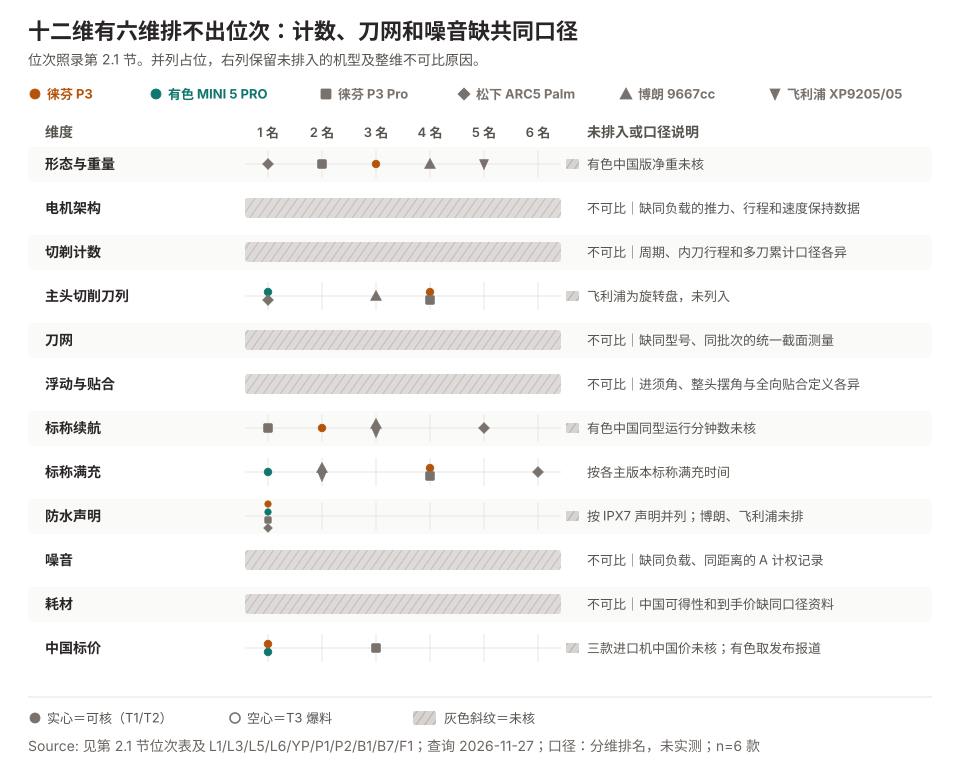
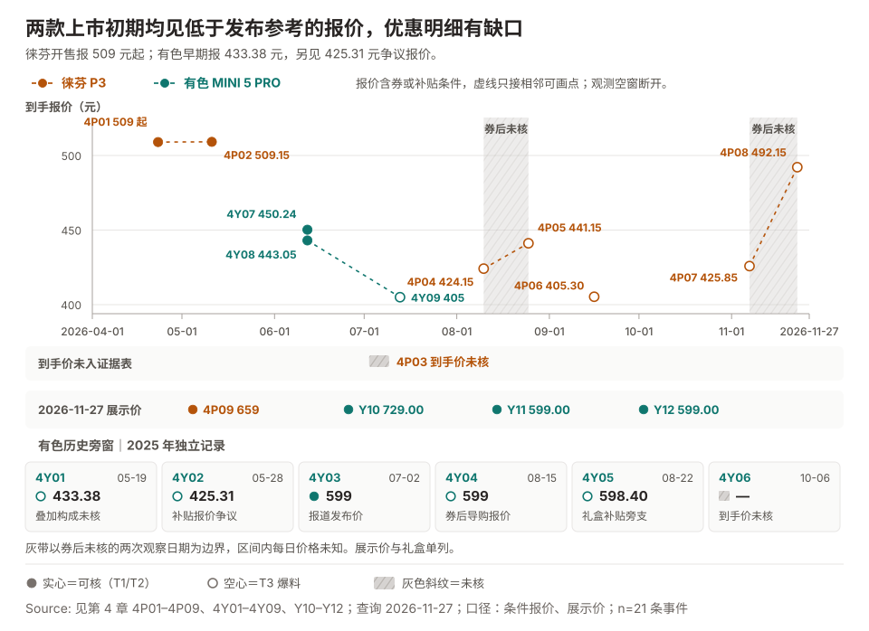

版本：v2.1 八章报告 检索基准日：2026-11-27（北京时间）。文中所有价格、榜单、页面快照均以该日为「截至日」，另有历史日期者单独标注。 证据分级：T1 一手文档（官网规格 / 说明书 / 专利 / 备案 / 财报 / 海关）＞ T2 多渠道交叉印证 ＞ T3 推断与旁证。 口径纪律：标价 / 券后 / 补贴后 / 含税 分列；GMV / 销量 分列；标称 / 实测 分列。同一指标出现两个数时并列，不合并、不平均。
0 摘要
摘要依据：以下三条判断依据第 2、3 章。第 4–6 章的价格、份额与供应链成本证据可能改变这些判断或其证据等级。
判断 1｜徕芬 P3 的「双直线电机」是营销级差异，不是架构创新
- 结论：直线电磁驱动用在量产剃须刀上，松下 1995 年就做到「每分钟 12,000 行程、三枚刃」并自称世界首次；徕芬 200±10 Hz＝12,000 周期/min，与之同量级。差异在「双组反向」，但双组减振的实际幅度、相位与机身振感没有同负载对照数据。
- 证据等级：T1（松下官方 70 周年稿，1995 年条目；徕芬官网规格）
- 反证条件：若拆机＋同负载台架测得双组反相后机身振动显著低于单组（如同一测点加速度 RMS 降幅 >20%），本条应升为「半真」。
判断 2｜两台主角真正可比的差异是「充电」与「刀列数」，不是「谁剃得快」
- 结论：MINI 5 PRO 铭示 5 V⎓3 A（15 W）、满充 35 min；P3 标准版 5 V⎓1 A（5 W）、满充约 90 min——输入功率差 10 W、满充时间差 55 min，这是两者最硬的一组差异。刀列上 MINI 5 PRO 为 5 列、P3 为 3 列。但「切剃能力」无法比较：徕芬按完整周期（12,000 CPM/路）、松下按刀列累计（70,000）、有色 324 万次/min 的定义未公开，三套计数不在同一坐标系。
- 证据等级：T1（包装铭示／官网规格）、T2（渠道计数口径）
- 反证条件：若出现同一台架、同一负载、同一计数窗口下三机的单位时间切剃事件数，且差异稳定可复现，本条关于「不可比」的判断判错。
判断 3｜599 元买到双直驱属于成本创新，但不是「首创」
- 结论：可站住的只有一条——在 599 元价位保住双直驱、改用玻纤 PC 壳与冲压刀网（P3）／全合金壳（MINI 5 PRO）。跨品牌「价格首创」已被松下低价直线电机产品反证；成本优势能不能持续，取决于自制率与采购价。
- 第 6 章补进来的证据：徕芬珠海斗门有成品线与专用电机专线（T2）；公司称自制率 >80%（T2，单一来源待交叉）；外部供应商已有两条 T1 关系——方正电机 2024 年报披露「深圳基地与徕芬开展电动牙刷和剃须刀项目」（对应子公司高科润的 PCBA 业务），高义包装北交所问询回复第 105 页客户函证列「珠海徕芬」。但两者都未绑定到 LFESP3-P 这一型号，且拿不到采购价。
- 证据等级：T1（供应商披露、规格与定价）、T2（自制率口径）、T3（成本推断）
- 成本这一项目前给不出数：第 6 章只能给结构（电机/电芯/PCBA/刀头/壳体/组装），给不出区间，因为缺 BOM 锚点。因此「毛利空间」在本报告中不成立为结论，只作待验项。
- 反证条件：若拆解或供应商披露显示电机模组为外购通用件、单台 BOM 中电机占比低于 15%，则「成本创新」降为营销；反之，若自制率 >80% 被第二个独立来源证实且刀网为自产，本条可升为「半真偏真」。
- 反证条件：若第 6 章显示电机模组为外购通用件、单台 BOM 中电机占比低于 15%，则「成本创新」也降为营销。
本章一句话
这份矩阵最有用的一栏不是「谁第一」，而是72 格里 11 格没有任何可核数据、1 格口径不可比——它标出了这个品类里到底哪些参数是拿来做营销的，哪些是真的能比的。另有 35 格矩阵有值，原稿漏录的证据行已在 v2.4 补齐（属记录缺口，不是数据缺失，两者不能混说）。
1 赛道与口径
1.1 这是一场什么仗
一句话：这是一场「直线电机从 2,000–4,000 元下放到 599 元」的价位带战争，不是刀头数量的战争。
- 品类边界：电动剃须刀（HS 8510.10），细分到便携往复式。旋转式（飞利浦）与多刀头大型往复式（松下 ARC5、博朗 9 Pro+）是同品类的两个参照系，不是同一细分。
- 参战方与角色：
- 价格破坏者：徕芬 P3 标准版（599 元）、有色 MINI 5 PRO（599 元）
- 技术守成者：松下（直线电机先行者，ARC5 系列）、博朗（往复式多元件）
- 形态异类：飞利浦（旋转式，i9000 打的是「贴合 + 智能」而非「电机频率」）
- 为什么现在打：两个中国品牌都把「直线电机」当成可下放的通用件，而不是旗舰专属件。这个判断是否成立，由第 3 章创新判定与第 6 章成本结构共同验证。
1.2 价格带切分
| 价位带 | 代表机型 | 形态 | 电机 | 这场仗里的角色 |
|---|---|---|---|---|
| 300–499 | 博朗 Series 3 3040s（页面快照 284–369 元）、未野 MAX（活动价 399 元） | 往复 / 旋转 | 传统旋转电机 | 入门守门员 |
| 500–699 | 徕芬 P3 标准版 599、有色 MINI 5 PRO 599 | 便携往复 | 直线电磁 | 主战场 |
| 1,000–1,600 | 飞利浦 S7888/99（渠道标价 1,499 元，免税报价 1,149.20 元） | 旋转三头 | 旋转 | 上一代旗舰清仓带 |
| 1,500–2,500 | 松下 ARC5 ES-LV67（美版历史 149.99 美元） | 大型往复五刀 | 线性马达 | 技术参照系 |
| 2,500+ | 博朗 Series 9 Pro+ 9667cc、飞利浦 i9000 XP9205/05 | 旗舰往复 / 旋转 | 各自旗舰 | 品牌溢价带 |
价格均为各来源原币原口径，未换算、未合并。完整价格时间线见第 4 章。
1.3 口径声明（读后面所有表之前先看这一节）
- 「往复次数」三套口径不能直接比：
- 徕芬：
200±10 Hz＝约 12,000 完整周期/min（单电机）；欧洲对双电机标 24,000 CPM - 有色：14,000 RPM（渠道口径）；欧洲 MINI 5 另标3,240,000 次/min- 松下：内刀约14,000 往复/min；ARC5 Palm 美国标70,000 cross cuts/min- 博朗：不公开电机频率，只给「剃须元件数」 → 第 2 章会把这四种数的定义逐个拆开，并说明哪些格子注定「不可比」。 - 续航三种口径：连续空载至停机 / 每天 1 min 折算（有色欧洲站的「90 天」就是这种）/ 标称。P3 的 80 / 90 / 100 min 分别来自首发资料、中国官网、台湾渠道。
- 刀网厚度两种工艺：冲压（P3 标准版）vs 电铸（P3 Pro 的 0.055 mm）。厚度数字不跨工艺比较。
- 地域版本：中国版 / 欧洲版 / 土耳其渠道 / 印尼套装参数不一致（有色尤甚：420 mAh×2 / 800 mAh / 900 mAh / 450 mAh×2 四套并存）。本报告以中国大陆版为主口径，海外版本只作对照并逐条标注。
- 时间窗：上市至 2026-11-27。P3 于 2026-04 开售、2026-05-11 开发布会；MINI 5 PRO 于 2025-05 公开。
1.4 两个主角的身份
| 徕芬 P3 标准版 | 有色 MINI 5 PRO | |
|---|---|---|
| 型号 | LFESP3-P | YSFSW50-Z |
| 制造主体 | 深圳术叶创新科技有限公司 | 深圳市加减生活科技有限公司 |
| 生产主体 | 珠海徕芬创新科技有限公司（广东珠海） | 未核（待第 6 章） |
| 上市 | 2026-04 开售；2026-05-11 发布会 | 2025-05-10 品牌公开；首个正式开售日未核 |
| 中国定价 | 599 元（发布会）；509 元起（4 月开售报道）；国补后 509.15 元 | 599 元（发布报道）；京东 598 元 |
| 核心主张 | 自研双直线电机 L2，200±10 Hz | 磁悬浮高速直线电机，14,000 RPM，五刀列 |
上表每个数字的出处见第 2 章与第 4 章对应行；此处只作导读，不作为独立证据。
2 产品对比矩阵
2.1 对比矩阵
检索日期 2026-11-27（北京时间），适用于本章所有来源、未核项及据表计算的差值。历史点另列事件日期。P3 标准版与有色以中国大陆样机为基准。对照锁定 P3 Pro 中国版 LFESP3、ARC5 Palm 白色 ES-PV6A-W、Braun 9667cc 和 Philips XP9205/05。对照的跨国同型号资料带地区标记。T1 表示一手规格、说明书、包装或专利的原文或铭示，包装只有委托方转录时明确标注。T2 表示交叉资料支持的有限结论。T3 表示单渠道线索、旁证或工程推断。官网宣传的可核范围是品牌做过该声明，涉及工艺、实效或自产的落实另核。
| 比较维度 | 徕芬 P3 标准 LFESP3-P | 有色 MINI 5 PRO YSFSW50-Z | 徕芬 P3 Pro LFESP3 | 松下 ARC5 Palm ES-PV6A-W | 博朗 Series 9 Pro+ 9667cc | 飞利浦 i9000 Prestige XP9205/05 |
|---|---|---|---|---|---|---|
| 1 形态与重量 | 便携往复，玻纤增强 PC，187.1 g，59×72.5×35.4 mm｜L1｜T1｜中国官网主机＋刀头，整机高宽厚 | 便携往复、合金机身；整机质量未核；约 180±6 g、62×39×52 mm 为异区线索｜Y1 · Y4 · Y6｜T1/T3｜中国官网只给形态与材质类别，土耳其重量含盖与否未交代且与普通版复用，印尼尺寸未见装配基准 | 便携往复，CNC 铝合金，179 g，57.22×70.45×34.80 mm｜L2｜T1｜中国主机＋刀头，整机高宽厚 | 便携往复，约 145 g，57×72×45 mm｜P1｜T1｜同型号日本规格，带刃不含保护盖，高宽厚 | 长柄往复，207 g，168×66×44 mm｜B1 · B7｜T1｜日本同型目录本体质量、尺寸转列为高宽厚，不含清洁座及盒 | 长柄旋转，约 226 g，约 180×65×70 mm｜F1 · F4｜T1｜日本说明书同型号本体质量及高宽厚，不含外置附件 |
| 2 电机架构 | 双直线电磁 L2，200±10 Hz｜L1 · L8 · L9｜T1/T2｜品牌称自研，视频可观察标准版机芯，专利给电磁方案，具体自产环节未核 | 往复刀；渠道称高速直线电机 14,000 RPM，数量、自研、实测 Hz 未核｜Y1 · Y3 · Y7｜T1/T2｜品牌确认刀具往复，直驱及 RPM 为渠道标称，“磁悬浮”支承方式待证 | 双直线电磁 L2，200±10 Hz｜L2 · L3 · L8｜T1/T2｜中国官网标称，两组 L1 为品牌定义，自研自产为声明 | 直线驱动，约 14,000 内刀往复/min；数量、自研归属未核｜P1 · P4｜T1｜日规标称及中国同技术族释义，负载频率未披露 | 往复刀，品牌称 Sonic 振动等功能；电机转换原理、数量、自研及 Hz 未核｜B1 · B2 · B3｜T1｜产品页及售后资料确认切剃形式，传感采样率与电机频率分属两项 | 旋转内刃；电机类别、数量、自研和实际 RPM 未核｜F1 · F2 · F3｜T1｜确认刀的输出运动，官网切割动作数未给电机转速 |
| 3 标称切剃计数与定义 | 12,000 CPM/路，按 200 Hz×60 换算；欧洲宣传 24,000 CPM 双路合计｜L1 · LE｜T1｜完整往复的每分钟周期及品牌合计，单程和实切须根未核 | 14,000 RPM 为渠道电机读数口径；324 万次/min 同型号定义未核｜Y3 · Y5 · Y7｜T2/T1｜欧洲普通款按五动刀累计宣传，单程、逐刃交越规则未公开 | 12,000 往复/min/台；24,000 CPM＝两台相加｜L3 · L4｜T1｜前者官网转引 WTS2025-5670，后者欧洲宣传，三列动刀实切次数未核 | 70,000 cross cuts/min＝约 14,000 × 5｜P2 · P3 · P4｜T1｜美国为型号族广告，日本指南给五刀计数公式，中国技术页说明内刀往复 | 9667cc 可复核切剃计数未核｜B1 · B3｜T1｜该 SKU 页的感应频率是传感器指标，家族宣传数不填入 | 700 万动作/min（香港）；15 万次/min、72 枚旋转刃（日规）｜F1 · F3｜T1｜同型号不同市场用词与值并列，逐环、逐刃及孔交越公式均未核 |
| 4 刀头列数与分工 | 3 列＝2 穹顶短须＋1 中置开放长须｜L5 · L8｜T2｜中国发布会及标准版拆机画面交叉，按切削列 | 5 列往复；专用短网/长梳实际分配未核｜Y2 · Y8 · Y5｜T2/T1｜型号渠道与电镀银开箱支持五列；4 Lockcut＋1 Precut 见欧洲普通 MINI 5 | 3 列＝2 穹顶短须＋1 开放长须｜L3 · L6｜T1｜中国切削列，磁吸为总成连接 | 5 列＝2 挤出深剃、2 贴伏须深剃、1 下巴长须修剪；另有滚轮｜P1 · P5｜T1｜按五切削列，滚轮辅助滑动 | 5 个贴面元件含 2 网＋2 修剪＋1 护肤元件；另有背面 ProTrimmer｜B1｜T1｜按官网拆分图，主头 4 切削列；背剪另计 | 3 个旋转剃须盘，Dual SteelPrecision／Lift & Cut；另有弹出修剪器｜F1 · F2｜T1｜按圆盘及提升后剪切的作用，长短须不按条形列分 |
| 5 刀网工艺与厚度 | 冲压不锈钢（发布资料），拆解近照为错列圆角长孔；中国厚度、开孔率未核；台湾及欧洲各标 55 μm｜L1 · L7 · L8 · L10 · LE｜T2/T3｜按视频所拍批次及台湾渠道标称，量测部位未知 | 同批工艺、厚度、孔型、开孔率未核；50 μm 和六边形仅普通 MINI 5 官网页｜Y1 · Y4 · Y5 · Y8｜T1/T3｜土耳其反角描述无几何基准，不能用其推出网厚或工艺 | 电铸为媒体和拆解所述工艺、约 55 μm 为品牌实验室厚度；孔型尺寸、开孔率未核｜L3 · L4 · L8 · L20｜T1/T2｜标称厚度归属已核，工艺有渠道和拆解旁证，近照无标定截面 | 日系不锈钢外刃，弧形多功能分区；冲压/电铸、μm、孔尺寸及开孔率未核｜P1 · P2 · P5｜T1｜日美规格，内刃角度不当作外网参数 | 超薄 Precision 外网为品牌描述；工艺、μm、孔型尺寸与开孔率未核｜B1 · B2｜T1｜贴肤留茬词语并非网厚量测 | 芯盘式外刀；日本官网称外刀比旧 S99xx 薄 10%；工艺、μm、孔型尺寸及开孔率未核｜F1 · F3｜T1｜相对该品牌旧款的设计值，未见截面公差 |
| 6 浮动与贴合 | 动刀弹簧预紧可见；整头摆角、外网独立行程未核｜L1 · L8｜T2｜磁吸为连接，视频短须动刀预紧不等于外网法向浮动 | 整头摆角、各列独立行程及连动未核｜Y1 · Y6 · Y8 · Y9｜T3｜渠道只称贴合或磁吸，专利给候选弹簧结构，缺 SKU 绑定 | 穹顶有效剃须角 146.2°（厂内）；整头摆角及单列行程未核｜L3 · L8｜T1｜有效进须角按品牌靶件，不作为铰链摆角 | 外刃浮动机构；整头角、各列行程未核｜P1 · P2｜T1｜日规外刃可浮动，美国称 floating head，指标层级按日本结构名 | 整头 40° 自适应，元件同步贴合；各列行程未核｜B1 · B3｜T1｜标称头部适应角，持续贴合力未给 | 360° Precision Flexing Head；盘独立位移和机械限位未核｜F1 · F2｜T1｜全向贴合表述，非摆动量量测 |
| 7 续航 | 约 90 min 中国官网；80 min 开售资料；100 min 台湾渠道、100 min 欧洲品牌页｜L1 · L7 · L10 · LE｜T1/T3｜分别为 2026-04-23 历史及地区标称，负载、自动停机后是否重启未明 | 中国连续续航未核；九机 90 天；土耳其 PRO 渠道约 90 min｜Y1 · Y3 · Y4 · Y5｜T3｜PRO 天数未披露每日时长；每天 1 min 的明确定义来自欧洲普通款 | 100 min｜L2 · L3｜T1｜充满持续工作，品牌引 No.WTS2025-5670，公开页未给负载及停机方式 | 50 min（美）；约 14 天×约 3 min/day（日本，折合约 42 min 间歇）｜P1 · P2｜T1｜两个地区各自声明条件，不合并 | 最长 60 min（美）；约 60 min 连续（日）｜B1 · B3 · B7｜T1｜美国为充满后无绳标称分钟，日本同型号目录为约 60 min 连续，PowerCase 备用电量单独 | 60 min｜F1 · F2｜T1｜单次充满的标称运行时间，负载与启停条件未公开 |
| 8 充电 | USB-C、5 V⎓1 A（5 W 铭示）、约 90 min；禁止边充边用；无线未核｜L1 · L11 · LP｜T1｜主机包装转录与说明书；额定输入、非实取或平均功率 | USB-C、5 V⎓3 A／15 W、35 min；边充运行未核；无线版礼盒有底座，银色样机支持性未核｜YP · Y3 · Y4 · Y6｜T1/T3｜中国给定包装铭示；土耳其同页 1 h 和约 7 h 并列，印尼套装约 8 h，模式/版本不充分 | USB-C、约 90 min，补 3 min 用约 7 min；台湾同型号 5 V⎓1 A（5 W）且不支持边充边用；中国额定 W/边充运行及无线未核｜L2 · L3 · L21 · L22｜T1/T3｜中国时间为品牌标称，台湾输入和使用限制为当地渠道 | USB-C、约 120 min、建议适配器输出 5 V⎓1 A（5 W）；日本 AC100 V 输入充电约 4 W；禁止边充边用，无线未核｜P1 · P6｜T1｜日规适配器容量/墙插功耗各有口径，美版说明书载明使用限制 | SmartPlug 5217 专用有线、清洁座及美版 PowerCase；约 60 min 满充、5 min 快充；禁边充边用；日本目录 7 W，Qi 未核｜B1 · B2 · B3 · B4 · B7｜T1/T2｜日本 W 为目录消费电力，具体测法与 DC 端实取未列；日本套装为普通收纳盒 | 电源端 USB-A 5 V／≥1 A、日版主机额定 5 V×1 A＝5 W，60 min 满充、5 min 快充，主机端专用插头；只可无绳使用；实取 W 与无线未核｜F1 · F2 · F4｜T1｜同型号规格及手册，用于供电端选型 |
| 9 防水 | IPX7；原始报告未核｜L6 · L11 · LP｜T1｜中国包装转录/厂商标示，说明书要求清洗前拔线并塞好接口 | IPX7 宣称；原始报告未核｜YP · Y4 · Y7｜T1/T2｜旧结构/文献稿记作包装标识，中国同版包装图未取得，渠道与评测另有标示，未取得同批浸水配置及原始数据 | IPX7；官网给 WTS2025-5669，原件未核｜L3 · L6｜T1｜报告编号可追溯，缺报告正文 | IPX7（日规同型号）；原件未核｜P1 · P6｜T1｜日本规格写通过基准试验，原始判据和批次记录未见 | 官网标全防水、可干湿剃；IPX 等级及原件未核｜B1 · B2 · B8｜T1/T3｜美版同型号官网声明；韩渠道有 IPX8 线索，品牌原件、适用版本及试验条件未核 | 可干湿剃、可全机水洗；IPX 等级及原件未核｜F1 · F2 · F4｜T1｜同型号日港资料，缺本后缀 IPX 标记及报告 |
| 10 噪音 | dB(A) 未核；约 65 dB 为旧稿所列单作者线索｜L1 · L12｜T3｜未交代距离、计权、底噪及负载，复查知乎拦截 | dB(A) 未核｜Y1 · Y4 · Y7｜T3｜产品及测评未见同型号距离和负载下声级数据 | dB(A) 未核｜L2 · L3｜T3｜官网未列，体感低振无同工况声级 | dB(A) 未核｜P1 · P2 · P6｜T3｜规格和手册无声级与距离 | dB(A) 未核｜B1 · B2｜T3｜产品及售后页无声级与距离 | dB(A) 未核｜F1 · F2 · F4｜T3｜产品、规格表及手册无同口径声级 |
| 11 刀头/刀网耗材 | 专用刀头组件；标准版官方 SKU、价、官网/京东/天猫现货未核｜L11 · L13 · L14｜T1/T3｜说明书指定专用件，配件页只见 Pro；通用说法待品牌确认 | PRO 刀网京东关联卡曾显示 ¥69.90；官方 SKU/价及现货未核｜Y2 · Y10 · Y15｜T2/T3｜京东公开索引价，线上直开正文未复现；天猫为第三方索引 | 官网 P3 Pro 刀头组件 ¥199、替换刀刃 ¥99 起；明确配件编码与京东/天猫现货未核｜L13｜T1｜中国官方挂牌，组件与散件不同粒度 | 日规 ES9040 网刃套件 ¥10,450 日元含税，ES9181 外刃及 ES9170 内刃独立列售（后者日官店 2,970 日元含税）；美规 WES9040P / WES9181 / WES9170｜P2 · P6 · P7｜T1｜官网/售后确认，京东天猫同版库存未核 | 96M 网刃盒；英国官网 £57.99 RRP、挂牌 £44.99；清洁液单列｜B2 · B5 · B6｜T1｜美版匹配表含 9667cc，英店报价，京东天猫同版库存未核 | 港版 SH91；日本 SH92/51；官方价和京东天猫同版库存未核｜F1 · F2 · F3 · F6｜T1｜随市场适配指南记录，替换单位为旋转刀头 |
| 12 价格（人民币除注明外） | 中国标价 ¥599（发布）；中国券后未核；国补后 ¥509.15（2026-05-11 部分地区）；海外含税未核｜L5 · L15 · LE｜T2/T1｜官方商城无可复核结算价，发布场景与现价区分 | 中国统一官方标价未核，历史发布报道 ¥599，九机 ¥599（巨蟒绿无线礼盒）；中国券后未核；补贴后 ¥598.4（2025-08-22，电镀银礼盒）；海外含税未核｜Y1 · Y3 · Y11 · Y12｜T2/T3｜发布价、渠道挂牌、历史补贴独立，礼盒与本样机附件边界不同 | 中国标价 ¥799；券后与补贴后未核；海外含税未核，欧店挂牌 €169.99、划线 €199.99｜L3 · L4 · L16｜T1｜欧洲展示价为不同市场，目的地税费按结算 | 中国标价、券后、补贴后未核；日本含税 ¥41,580 日元｜P8 ·｜T1｜日本官网白色同型挂牌；中国目录有进口条目而无可复核价 | 中国标价、券后、补贴后未核；英国含税 £224.94｜B3 · B4 ·｜T1（零售页挂牌）｜Currys Business 本型号报价，地区、套装及企业渠道特定 | 中国标价、券后、补贴后未核；日本零售含税 40,156 日元｜F1 · F3 · F5 ·｜T1（零售页挂牌）｜日本商户页明确后缀，细分配置及币种与中国分开 |

图 1｜两台主角可对照满充和刀列，有色 599 元是上市报道价。

图 2｜中国标价 3/6、耗材粒度 4/6，其余四维覆盖 5–6 款。

图 3｜十二维有六维排不出位次，余下位次仅适用于各维可比子样本。
位次与差值
仅在可比子样本内按所列定义编号，平手用并列占位。文末“不可比维数”只计整维无法给位次的行，“未核格数”含已有部分数据但仍带“未核”标记的格。未核或指标异质者列明具体机型，位次不外推至剃净、舒适或可靠性。
| 维度 | 位次、差值及条件 |
|---|---|
| 1 形态与重量 | 轻→重，① ARC5 Palm 约 145 g、② P3 Pro 179 g、③ P3 187.1 g、④ 9667cc 207 g、⑤ XP9205/05 约 226 g。相邻约差 34、8.1、19.9、19 g（T1）。MINI 5 PRO 中国主机净重未核，第六名不分配。日规与中国版混用限公开本体值。 P1 · L2 · L1 · B7 · F4 · Y4 |
| 2 电机架构 | 不可比。P3/Pro 的两路标称频率并列，动力高低缺同负载推力、行程及速度保持。松下约 14,000 内刀往复/min 与徕芬每路中心值差约 2,000/min，仅是输出名义速率的条件对照，待统一周期定义和负载。MINI 5 PRO 的 RPM 定义未核，博朗/飞利浦机械频率未核。T1/T3。L1 · L2 · P1 · P4 · Y3 · B1 · F1 |
| 3 切剃计数 | 不可比。同为双路周期合计时 P3 欧洲口径与 P3 Pro 并列。松下按刀列累计、飞利浦按旋转刃动作宣传、有色同型号定义未核、博朗精确 SKU 值未核。T1/T3。 LE · L4 · P3 · F1 · F3 · Y5 · B1 |
| 4 刀列 | 按主头切削列，①并列 MINI 5 PRO、ARC5 Palm（5），③ 9667cc（4），④并列 P3、P3 Pro（3）；跨档分别差 1 列，五列比三列多 2 列。飞利浦 3 盘不可排入。若把护肤件也当元件，博朗宣传的 5 与五切削列仍分口径。T1/T2。 Y2 · Y8 · P1 · B1 · L3 · L5 · F1 |
| 5 刀网 | 不可比。P3 Pro 有同型号品牌厚度，P3 的台湾数值和欧洲声明待核对应批次，有色 50 μm 的一手页为普通款，ARC5 Palm/博朗无绝对厚度，飞利浦仅相对旧型号。全六款开孔率和统一截面量测都缺。T1/T2/T3。 L3 · L10 · LE · Y5 · P1 · B1 · F3 |
| 6 浮动 | 不可比。博朗披露整头 40°，飞利浦 360° 表示全向，P3 Pro 146.2° 是穹顶有效进须角，三者差值无共同物理口径。其余三机缺整头角或单列位移。以同压力下的贴合面积和各列位移可比较。T1/T3。 B1 · F1 · L3 · L8 · Y8 · P1 |
| 7 续航 | 按表中指定市场标称运行分钟数，① P3 Pro 100，② P3 约 90，③并列 9667cc 与 XP9205/05（60），⑤ ARC5 Palm（美 50），相邻档差约 10、30、10 min。有色不占第六名，缺中国同型分钟数。P3 历史/台欧值及松下日规另列。T1，实测高低仍未核。 L1 · L3 · B1 · F2 · P2 · Y3 |
| 8 充电 | 按主版本标称满充用时从短到长，① MINI 5 PRO 35 min，②并列 9667cc/XP9205/05（60），④并列 P3/P3 Pro（90），⑥ ARC5 Palm（120）。博朗按日规本体充电时间，与美版充电盒配置分开。跨档差 25、30、30 min，两个主角差 55 min。按铭示输入，有色 15 W、P3 5 W，相差 10 W；跨机型实际输入和无线能力不另排。T1/T2。 YP · B7 · B4 · F2 · L1 · L2 · LP · P1 |
| 9 防水 | 按已披露 IPX7 声明，P3、MINI 5 PRO、P3 Pro、ARC5 Palm 并列。9667cc/XP9205/05 仅确认干湿剃或水洗描述。六机原件和相同测试配置下的防水余量均未核。T1/T2。 L3 · L6 · YP · P1 · B1 · F1 |
| 10 噪音 | 不可比。六机缺同负载、距离、A 计权记录，P3 的旧稿单测无完整条件。T3。 L12 · Y1 · L2 · P1 · B1 · F1 |
| 11 耗材 | 不可比（到手价和中国可得性）。官方公开证据的粒度以松下外刃/内刃/套件及 P3 Pro 组件/替换刃最细，博朗和飞利浦有同型适配件，P3 标准版和有色尚缺官方 SKU/价组合。不同市场与总成边界无法做差价。T1/T3。 P7 · L13 · B5 · F2 · F3 · L11 · Y2 |
| 12 价格 | 中国发布/官方挂牌子样本从低到高，①并列 P3/MINI 5 PRO（¥599，后者发布报道），③ P3 Pro（¥799），相差 ¥200。进口三款对应中国价未核。券后无可排数据，补贴后两主角的地区、时间、礼盒不同，日元和英镑含税价的市场及套装均不同。T1/T2。 L5 · Y11 · L3 · P8 · B4 · |
价格分列（截至 2026-11-27）
| 机型 | 中国标价/公开挂牌 | 中国券后 | 中国补贴后 | 海外含税 |
|---|---|---|---|---|
| P3 标准 | 发布 ¥599，2026-05-11（T2） L5 | 未核，官方商城无公开结算价 L15 | ¥509.15，2026-05-11 部分地区（T2） L5 | 未核，欧洲产品页无结算税额 LE · L16 |
| MINI 5 PRO | ¥599，2025-07-02 报道所述上市价（T2）。九机巨蟒绿无线礼盒挂牌 ¥599（T1 渠道原文） Y11 · Y3 | 未核，缺相同电镀银套装的公开券明细 Y2 · Y12 | ¥598.4，2025-08-22 银色礼盒叠加促销及补贴（T3 历史爆料） Y12 | 未核，土耳其及印尼页的型号配置/税口径未对齐 Y4 · Y6 |
| P3 Pro | ¥799，中国官网挂牌（T1） L3 | 未核，官方页为挂牌 L3 | 未核，未见同口径补贴信息 L3 | 未核，欧洲商品页显示 €169.99、划线 €199.99（T1 展示价），按目的地税费规则待核 L4 · L16 |
| ARC5 Palm | 未核，未找到可核中国挂牌（原引 C1 目录页内容不符，已撤回） | 未核，无明确券构成 | 未核，无可核补贴 | 41,580 日元，日本官店白色同型含税挂牌（T1） P8 |
| 9667cc | 未核，未找到确切后缀对应价（C1 已撤回） | 未核，无同型公开券 | 未核，无同型公开补贴 | £224.94，英国企业零售商含税挂牌（T1 渠道原文） B4 |
| XP9205/05 | 未核，未找到 /05 后缀可核价（C1 已撤回） | 未核，无同后缀公开券 | 未核，无同后缀公开补贴 | 40,156 日元，日本商户 XP9205/05 含税挂牌（T1 渠道原文） F5 |
不可比说明
- 机械往复、RPM、多刃累计及实切数量各有计量对象（T1/T3）。 以完整来回为一个周期，200 Hz×60＝12,000 周期/min；每周期包含两个单向行程。徕芬欧洲 24,000 是两套电机各 12,000 相加。松下 70,000 将约 14,000 乘五个刀列。欧洲普通有色的 324 万宣称由 14,000 RPM 驱动五个往复动刀，同页未列逐刃齿数及双向计数规则。若 RPM 与完整周期一一对应，反算约 231.4 个合计动作/周期、约 115.7 个合计动作/单程，仅供查算法，逐刃数不可由此唯一确定。反证条件为量测证明该 RPM 并非整周期，或品牌给出不同计数窗口。飞利浦同型号港日的 700 万与 15 万另按原文保留，缺少可复算的交越公式。实切需统一须样、刀压、行程、捕获与残茬判据。 L1 · L3 · L4 · P3 · Y5 · F1 · F3
- 续航需分标称运行、间歇折算和连续空载（T1/T3）。 中国 P3 的约 90 min 只公开标称分钟；P3 Pro 官页载明充满持续工作，缺报告负载。松下日规约 14 天、每天约 3 min 与美规 50 min 分列。有色九机 PRO 写 90 天而未列每日占用，欧洲普通版另有每天 1 min 的脚注。没有统一的六机连续空载数据。统一满充、环境、载荷和停机判据，并把说明书定时停机及重启间隔单独记录。 L1 · L3 · L11 · P1 · P2 · Y3 · Y5
- 基材厚度、成品网厚、残茬高度分别测（T1/T2/T3）。 冲压片应区分平料厚度和成形后网面截面，P3 Pro 的约 55 μm 为品牌实验室名义值，电铸来自渠道和拆解旁证。曲面、圆角和镀层会改变测点定义。旧 FMEA 把电铸 55 μm 填给标准版，旧拆解较完整的底稿将该字幕归于 Pro，标准版中国样机保留未核。欧洲普通 MINI 5 标 50 μm，不能据此算主角刀网谁薄多少。 L1 · L3 · L7 · L8 · L10 · Y5
- 市场、批次与套装分离（T1/T3）。 中国 PRO 包装转录为 420 mAh×2、35 min，普通 MINI 5 欧洲页为 800 mAh、约 60 min；旧稿所记土耳其 900 mAh/约 7 h 在普通/PRO 两页复用，且 PRO 同页规格卡另有 1 h，复查在底部正文看到复用的 900 mAh。印尼 PRO 450 mAh×2、约 8 h 归具体套装线索。P3 中国包装批次先于线上说明书文件名日期，台湾/欧洲给出异区标称。松下旧稿美国 variant 现指限定版，耗材与日本含税价只按明确的白色 ES-PV6A-W 核对。 YP · Y4 · Y5 · Y6 · Y13 · LP · L10 · L11 · LE · P8
- 贴合角、曲面几何、额定输入各用本义（T1/T3）。 刀头有效剃须角、整头摆动角以及全向贴合没有共同旋转轴。充电的 15 W、5 W 是主角包装额定输入，松下 AC 充电消耗与适配器容量分别记录，只有同起始荷电、同终止条件的 V/I 曲线可以回答实际充电和温升差。 L3 · B1 · F2 · YP · LP · P1
2.2 拆机级 BOM 对照
高置信限可明确归属的规格或可见结构。标准版公开视频为浅色样机，铭牌及批次未复核。MINI 5 PRO 现有同型开箱可核外观，未找到同型号机内电路板照片、丝印或公开维修图，专利只作为拆解比对。P3 旧结构稿称未找到公开拆解，旧报告另有同系列对比拆解记录，以后者标注的画面范围取证。
| 物料 | P3 标准版 | MINI 5 PRO | 依据（丝印/拆机时间点/FCC 照片/专利附图） | 置信度 |
|---|---|---|---|---|
| 电机（线圈/磁路/弹片/配重/数量） | L2 双直线电机。视频可见双组与输出端；线圈匝数、磁材牌号、弹片尺寸及独立配重未核 | 渠道称直线电机；数量、线圈、磁路、弹片及配重未核 | P3 拆机约 02:05 起、04:22–04:47；术叶专利显示反向运动、两组电磁驱动及弹性支承，量产绑定待证。P3 Pro 官网有扁铜线及两套 L1 声明；有色专利附图用于对照刀架/驱动。 L1 · L3 · L8 · L9 · Y3 · Y9 | P3 数量高 T1/T2，材料待核；有色 T2 声明/机芯结构待核 |
| 电芯（容量/串并联/Wh/型号） | 1000 mAh／3.8 Wh 整机额定；视频两块、作者称单块 500 mAh，丝印不可辨；串并联未核 | 包装转录 420 mAh×2；标称电压、Wh、串并联及型号未核 | P3 视频约 04:52–04:59，可见左右电芯，数字来自讲解。包装与规格只证明铭示；有色未取得电芯标签照片。 L1 · L8 · LP · YP | 额定高 T1（有色限转录），P3 单体容量 T3，拓扑待核 |
| 主控 MCU | PCB 画面可见，丝印不可辨 | 未核，无同型 PCB 图 | P3 视频约 03:00–03:35；有色中国/全球手册入口无机内结构图。充电头网 T1 Pro 的中微主控与芯海压感为同品牌旁证。 L8 · L17 · Y1 · Y14 | 两机型号均待核；同品牌旁证 T3 |
| 电机驱动 IC / 拓扑 | 驱动 IC 丝印不可辨；桥路、驱动路数未核 | 未核，无丝印及电路图 | P3 视频约 03:00–03:35。T1 Pro 拓尔微驱动、艾为触觉马达驱动仅为该拆机识别；有色专利是机架结构资料。 L8 · L17 · Y9 | 两机待核；同品牌旁证 T3 |
| 充电管理 IC | 充电行为见说明书，芯片丝印不可辨 | 铭示输入及满充时间可读，IC 与 CC/PD 电路未核 | P3 PCB 视频及说明书；T1 Pro 钰泰充电 IC 为同品牌旁证。检查有色手册入口、包装转录。 L8 · L11 · L17 · YP · Y14 | 充电铭示 T1，器件均待核 |
| 刀网（材质/工艺/厚度） | 冲压不锈钢，错列圆角长孔；厚度、牌号和孔率未核 | 工艺、材质牌号、厚度、孔率未核 | P3 开售稿及约 05:50–06:25 拆解近照，约 06:05 的 55 μm 字幕对应 P3 Pro 后续画面；欧洲有色普通版 50 μm 及网孔只作旁证。 L7 · L8 · L3 · Y5 · Y8 | P3 工艺与可见孔型 T2；P3 厚度及有色刀网构造均待核 |
| 动刀（材质/硬度/镀层） | 短须动刀及法向预紧弹簧可见；钢种、硬度、镀层未核 | 机内实际钢种、硬度、镀层未核 | P3 视频约 05:00–05:47；P3 Pro 官页 301 不锈钢脚注明确限定 Pro；有色专利附图有动静刀架但未指向该 SKU。 L3 · L8 · Y9 | P3 可见结构 T2，材料及有色结构待核 |
| 壳体（材质/工艺/表面） | 玻纤增强 PC、Monocoat 亲肤工艺；透明视窗可见，材质、结合方式未核 | 官方全合金机身，电镀银为包装配色名；合金牌号、零件分布、成形工艺及真实表面镀层未核 | P3 规格与发布会、视频 01:05–01:28；PRO 中国官网及开箱、包装。P3 Pro 对照为 CNC 一体加工＋阳极氧化铝合金。 L1 · L2 · L5 · L8 · Y1 · YP · Y8 | 规格高 T1，表面命名 T1，实物分层及加工路径待核 |
| 密封件（O 圈/胶塞/灌封） | USB-C 防水胶塞由说明书确认；轴周椭圆结构可见，材料、是否 O 圈、多重密封和板级灌封未核 | 胶塞、轴封、壳缝密封及灌封工法未核 | P3 说明书清洗及视频约 04:22–04:47；术叶传动杆密封专利为候选结构；有色产品/手册无同型机内视图。 L8 · L11 · L18 · Y1 · Y14 | P3 胶塞 T1、轴周外观 T2，其余待核 |
| 显示与交互（灯/屏/按键） | 工作灯、旅行模式灯、感应按键；压感芯片及按键装配结构未核 | 开箱可核机身操作区，渠道列旅行锁；指示灯映射、显示实现及按键感测元件未核 | P3 官网规格及官方说明书操作页；有色开箱/渠道。P3 Pro 为环形激光微孔工作指示及飞机图标旅行灯。 L1 · L2 · L11 · Y3 · Y8 | P3 对外功能 T1；有色渠道与外观 T2，机内机构待核 |
| 电池保护板/NTC | 保护板形态、保护 IC、NTC 丝印与配置未核 | 同型号保护板、保护 IC、NTC 和均衡未核 | P3 视频两块电芯画面不可判保护器件；官方报废拆解仅给总成。T1 Pro 电池小板为旁证。未取得有色板图。 L8 · L11 · L17 · YP · Y14 | 两机待核；同品牌旁证 T3 |
2.3 BOM 差异与成本含义
| 待供应链证据验证的判断（均 T3） | 若成立，成本差主要来自 | 核查与反证条件 |
|---|---|---|
| P3 双路 L2 比有色假设的单执行器更费机芯件与调校 | 第二套线圈/磁路/支承、装配对中和反向运动调校 | 同型拆机认数量、称磁材铜材、对照驱动路数和工站时间。若有色同样需要等量或更多执行器及调校，或机芯同口径报价差主要由别的部件解释，此条判错。 L1 · L8 · L9 · Y3 |
| 有色合金壳相对 P3 玻纤 PC 增加成形、表面和良率成本 | 合金毛坯成形/补加工、表面处理及外观件良率 | 对照样机材料与截面、浇口/刀纹、挂具痕、表面层及供应商工序报价。若可见合金仅局部饰件且按等量报价的壳体组件无相应溢价，此条判错。 L1 · Y1 · YP |
| 如果有色五列网架及内外刃工艺高于 P3 三列冲压方案，切削总成成本会拉开 | 刀网成形与开孔工序，另加刀列公差配对和组装良率 | 比较实际工艺、网厚截面、刀架零件/镶件复用、模具寿命和成品良率。若有色使用低成本共模件、配对工时不增且刀网总成报价并未增加，此条判错。P3 Pro 媒体所报电铸可做取样对照。 L3 · L7 · L8 · L20 · Y2 · Y8 |
| 如果有色较快满充需要实际较高电流且增加了温控/专用电芯要求，电气件成本会拉开 | 电芯倍率、充电电源路径、接口电流规格、热监控与分选 | 先实录 USB 及电芯侧功率，再按丝印、充电允许倍率及同体量报价核对。若实际功率和温控规格相近，时间差主要来自容量或截止定义，且没有器件/热监控差，此条判错。 LP · YP · L8 |
2.4 本章缺口
| 要回答的问题 | 现有证据到哪 | 缺什么 | 谁能补 | 怎么补 |
|---|---|---|---|---|
| 六款谁更轻、握持厚度差多少 | 同型号日规给松下、博朗与飞利浦本体规格，徕芬两机有带刀值，有色异区复用数字 | 有色中国净重与各样机统一取点 | 拆机/样机实验室 | 六机按带刀头、不含盖和附件称重，做高宽厚取点图。 L1 · L2 · P1 · Y4 · B7 · F4 |
| 有色及竞品电机数量、驱动原理和加载速度 | 徕芬 L2 可确认，有色渠道直线口径，松下标称内刀速率 | 机芯照、相位、行程、加载频率 | 拆机＋品牌 | 高速视频/位移计在等载荷标定完整周期与单程，拍磁路、线圈和支承。 L9 · Y3 · P4 · B1 · F1 |
| 品牌累计切剃数按什么事件统计 | 徕芬与松下公开加总，欧洲普通有色只给五刀总值，飞利浦港日不同 | 逐列/逐盘刃数、刃孔交越、双向规则和算法版本 | 品牌＋拆机 | 索取公式或原始测试口径，按刀具几何及运动轨迹复算。 L3 · P3 · Y5 · F1 · F3 |
| 刀网谁更薄，实际材质工艺如何 | 中国标准 P3 冲压线索，Pro 品牌名义电铸厚度；普通有色数值有来源 | 同型截面、牌号、网厚公差、孔型和开孔率 | 拆机/材料实验室＋品牌 | 固定截面基准多点测厚，标定显微照片测孔型及开孔率，确认冲压毛刺或电铸组织。 L3 · L7 · L8 · Y5 |
| 谁贴合更好 | 博朗有整头角、飞利浦有全向声明、松下有浮刃机构 | 整头摆角、各列位移/预紧力，贴肤面积 | 拆机/样机实验室 | 固定曲率和法向压力，逐列测下压/回弹，记录相邻列联动及摆角。 B1 · F2 · P1 |
| 谁续航长、谁充电快 | 品牌铭示和地区标称，缺统一工况 | 可复核输入 V/I、实际满充和运行曲线、无线版本 | 拆机/样机实验室＋品牌 | 记录同起始 SOC 到终止的 USB 输入曲线，分空载、定负载、间歇运行；验证无线底座身份。 L1 · L2 · YP · Y3 · P6 · B1 · F2 |
| 六机防水等级及报告能否同口径 | 四机有公开 IPX7 标示，Pro 有报告编号；外两机有干湿剃说明 | 六机现有报告全文、样品/充电口配置和判据 | 品牌/检测机构 | 以型号和批次索取报告，保存实验室、标准版本、样件与通过判据。 L3 · L11 · YP · P1 · B1 · F1 |
| 谁更安静 | 只有 P3 第三方粗读线索 | 同负载、距离、计权、底噪 | 样机实验室 | 校准声级计，分别记录同一距离的 A 计权空载与代表工况数据。 L12 |
| 换刀要花多少、哪些件互换 | P3 Pro、松下、博朗、飞利浦有已公开配件，两个主角仍缺正式适配表或报价 | 两主角正式 SKU、价格、官网/京东/天猫现货；全样本同市场价格 | 品牌/旗舰店 | 取型号明确的品牌配件页或客服书面适配说明，记录地区与含税、库存、组件范围。 L13 · Y2 · Y10 · P7 · B5 · F2 |
| 谁的国内到手价最低 | 发布价与零售挂牌、个别历史国补，海外价按已查页面 | 同日、地区、同款同批/同套装的公开价格及税口径 | 渠道/价格数据库（缺历史时待购） | 记录型号及商品页快照，独立归档标价、券、补贴、税与运费。 L5 · L15 · Y3 · Y12 · |
| 两款主角的机内芯片、母线及电芯保护用料 | P3 视频可见板及两电芯，有色包装转录 | 同批板号、丝印、驱动和充电路径、NTC、串并联及电芯标签 | 拆机＋品牌 | 两面微距和导通走线、标签拍照，按器件数据表脚位验证识别，区分封装和料号。 L8 · L17 · YP · Y14 |
来源复查状态
链接统一按 2026-11-27 记录。台湾 P3 渠道和知乎旧测量直访均返回 403，数值降为旧稿线索。旧 IT之家高度稿返回 404。松下美国旧链接已切到限定版变体，本章另链白色 ES-PV6A-W 页。有色欧洲页直访限流，公开网页文本可读。视频时间点沿用旧稿的画面记录，未复核其拆机批次。 L10 · L12 · L19 · P2 · Y5 · L8
3 创新判定
最有实证的成果是徕芬把双直线驱动配置放进了 599 元发布定价的 P3 标准版。 同系列对照可见，标准版保留 L2 的标称配置，换用强化聚碳酸酯外壳与冲压刀网。成本降了多少、剃净与耐久是否保持、对手是否难在一年内量产同档方案，均待验证，判「半真」。松下已有低于该价的直线往复式历史案例，因此「把直线电机首次从高端档下放」不成立。有色 PRO 可核的是紧凑合金机身和五列的商品配置线索，「磁悬浮」「324 万」及薄网文案尚不能证明该型号有可感知的技术领先。 徕芬标准版规格 · 徕芬 Pro 规格 · 标准版发布报道 · 松下 ES-ST29 历史京东报价 · 有色国内官网
判定分布：真创新 0 条 / 半真 3 条 / 营销 9 条。 证据核查日为北京时间 2026-11-27。无发布日期的页面均记为核查日快照。T1 为品牌原始规格、专利公开文本或标准，证明其各自记载的内容。T2 为渠道和交叉观察。T3 为工程推断及待核线索。差异、可感知、难复制三项全过才判真创新。前两项通过判半真，体验项对应体验改良。只有差异，或连差异都未能证实，判营销级。判定对象是每节所写的创新主张。复制期限按任务要求采用 12 个月，从已有往复式量产能力的竞争对手立项算起，终点为同档同功能可售量产。以下期限判断均为 T3，缺少对手项目记录时明确写未证。
A｜徕芬 P3 标准版（LFESP3-P）
主张 1：自研高速双直线电机 L2 体现独有研发与制造
- 主张方原话｜徕芬中国 P3 技术规格「徕芬自研高速双直线电机 L2」，页面未标发布日期，核查日快照。 品牌规格，T1 宣称
- 差异｜品牌有具名人员参与的双驱动、双运动组件公开设计，相较采购通用单驱动模组，有自研结构方案证据。自研设计可追到专利，量产 L2 逐项设计归属待证。自研绕线、磁钢或弹片自制与外购比例均未核。
- 可感知｜无可感知证据。拆机可识别标准版搭载双组输出的机芯，研发归属无法由握持体验识别。 2026-05-23 第三方拆机，约 02:05 起
- 难复制｜12 个月内做功能近似方案有既有反相直驱专利可参照。完全复刻指定结构受权项约束，达到相同负载行程、寿命及一致性的用时未证。
- 独立证据｜CN223124712U 独权 1 给出双驱动、双运动及反向关系，支持术叶曾公开设计。36 氪现场报道能支持珠海有电机及剃须刀制造能力，尚无该 SKU 的工序流转卡、绕线批号或磁材、弹片采购凭证。 专利，2025-07-18 授权公开 · 36 氪现场报道，2026-07-10
- 反证与边界｜若带料号的供应商交付图及开发合同显示市售 L2 是既有完整外购机芯，撤回自行设计的量产推断。若量产批次图纸、现场工单、供应商物料表共同闭环，改判自研和自制的具体深度。
- 判定｜营销。结构研发有证据，「自研」自身的用户收益及难复制性未过。
- T 级｜T1 设计文本与标称，T2 制造旁证，T3 量产逐项归属及复制。
主张 2：200±10 Hz／12,000 CPM 是新的直线驱动性能
- 主张方原话｜徕芬中国 P3 规格「200±10 Hz」，核查日快照。开售稿转述商品数据「往复次数 12000 次 / 分」，2026-04-23。 品牌规格 · 开售稿
- 差异｜按完整机械周期计，200 × 60 = 12,000 周期/min，公差换算为 11,400–12,600 周期/min。松下 1995 年三刀机的品牌史记录也为 12,000 内刀行程/min，松下 ES-LV67 标称约 14,000 驱动/min。两个品牌对「行程」与完整来回未在同一台架验证，保留原词。P3 Pro 官网脚注把双组各自的 12,000 相加，属于合计事件数。 松下 2025-09-11 厂史 · 松下 ES-LV67 标称，核查日快照 · 徕芬 Pro 脚注，核查日快照
- 可感知｜无可感知证据。没有把频率与相同行程、刀网、法向压力和负载下的净剃、夹须或皮肤刺激关联起来的第三方对照。
- 难复制｜12 个月内实现该频率量级在工程上已有在售先例。真正的开发工作是带载行程、热管理、磁路及弹片疲劳一致性，这些指标的超前程度未证。
- 独立证据｜松下 JP4487650B2 的定子、永磁动子及恒气隙往复为现有技术。博朗 DE10242094A1 已公开两驱动部件反相且由弹簧耦合。传统旋转电机也可用偏心轮产生直线刀动，刀的往复轨迹本身无法识别动力拓扑。 松下授权文本 · 博朗公开文本
- 反证与边界｜若同压力、须束和电量下测得 P3 的单组位移显示显著更高的带载频率与相同行程，且盲测净剃改善，可重判性能差异。松下和博朗早期公开仍为架构先例。
- 判定｜营销。规格可复算，电机类型和频率量级有在先产品。
- T 级｜T1 品牌口径及专利，T3 性能与复制推断。
主张 3：双电机反向运动令标准版显著减振
- 主张方原话｜徕芬 P3 Pro 官网概览「两个电机水平反向运动」，核查日快照。IT之家 2026-11-20 选购稿将 P3 系列与对向运动关联，标准版仅据该转述。 Pro 品牌概览，核查日快照 · P3 系列文案转述
- 差异｜相对单输出驱动，两个反向输出可把惯性反力在壳体输入处部分抵消。CN223124712U 进一步要求各驱动组件与其对应运动组件各自在电磁作用下反向，且两个运动组件也反向。博朗已有反相弹性耦合，本案具体差异为并排的双驱动、双运动组合。CN223124712U 独权 1 未给减振量。
- 可感知｜无可感知证据。须测两输出相位和握持区加速度，在空载、对称负载及偏载下复测。振幅或运动质量不平衡、空间力臂及不一致的切削反力仍可能留下平动或力矩。
- 难复制｜12 个月内有反相配重、其他弹性悬挂等替代路径。精确重现权项特征需核权属、评估授权。调试主要受两组动质量、频响、相位和装配公差约束，实测优势及量产工期均未证。
- 独立证据｜标准版拆机可看双输出外形，动态相位和两个驱动组件是否也在机架内活动均看不到。在架构层存在类比证据，在独权逐项层为「无对应证据」。WO2026066028A1 的双层弹性连接是另一组具体限定。 CN223124712U · WO2026066028A1 · 2026-05-23 拆机输出端约 04:22 起
- 反证与边界｜若标准版高速摄影显示双运动件同相，排除反向抵消解释。若对照加载时握持区振动显著降低且盲测可辨，同时量产件逐项对应独权，重判减振差异和壁垒。
- 判定｜营销。量产双输出是已观察的架构线索，标准版反相减振的实际幅度与感知均待证。
- T 级｜T1 权项，T2 外形观察，T3 相位、效果与复制。
主张 4：标准版冲压精钢刀网与 Pro 的 0.055 mm 电铸刀网形成创新
- 主张方原话｜IT之家 2026-04-23 从徕芬商品页转述标准版为「冲压精钢刀网」，2026-05-11 发布会报道亦列冲压工艺。徕芬中国 Pro 概览「55 微米超薄刀网」，脚注 11 指明品牌自有实验室测得 Pro 网厚约 55 微米，页面未标发布日期。 标准版开售稿 · 标准版发布报道 · Pro 官网脚注
- 差异｜材料、制造路径及产品档位确有区别。55 μm = 0.055 mm，品牌中国页归 Pro 的网片厚度。同页另列可选不锈钢网，截面比较时须记录具体换装件。台湾渠道也将 0.055 mm 列给其 P3 商品页，无法据此确定大陆标准版同批网厚。标准版是刀网工艺和壳体配置分档，剃净、磨耗与皮肤刺激的高低排序未核。 台湾 P3 商品页，核查日快照 · 大陆标准／Pro 规格
- 可感知｜无可感知证据。公开视频可对照孔形，缺少网厚横截面、粗糙度、控制压力的净剃与刺激盲测。
- 难复制｜有现成精冲或电铸供应链的对手，12 个月内做同类工艺有先例，孔缘毛刺、开孔率、厚度公差和良率需要重新验证。缺件价、寿命、工艺窗口，无法证明超期壁垒。
- 独立证据｜拆机可分辨标准版错列长孔与 Pro 所示对照网，画面中的厚度字幕不是独立计量。CN116945242B 独权 1 针对分体外壳、刀架及端盖两处嵌入关系。松下 2022 年技术发布已有外刀压制加工路线。 2026-05-23 拆机网面约 05:40 起 · 术叶刀头专利 · 松下技术发布
- 反证与边界｜若同批标准版金相或制造记录显示电铸成层，撤回冲压归属。若标定截面也测得约 55 μm，应同时记录两版本的厚度，仍各自保留工艺归属。
- 判定｜营销。有产品分档差异，工艺本身常见，性能创新未证。
- T 级｜T1 Pro 厂内标称及专利，T2 标准版工艺和视频线索，T3 成本与复制。
主张 5：599 元的 P3 把品牌双直线驱动放进更低价格档
- 主张方原话｜徕芬 2026-05-11 发布会经 IT之家报道「定价为 599 元」，部分地区国补后 509.15 元。定价和补贴价是两个口径。 发布报道及海报
- 差异｜对比品牌大陆 Pro 概览的 RMB 799 页面挂牌快照，标准版发布定价低 200 元，约 25.0%，属于不同时间的两个公开价格点。两版规格都列 L2 与同频率，分别采用玻纤强化 PC 与 CNC 阳极氧化铝壳。 Pro 概览与挂牌 · 标准版规格 · Pro 规格
- 可感知｜购入门槛的标价差可见。无可感知证据支持相同的净剃、振感、续航或全生命周期成本。
- 难复制｜12 个月内，已有往复式供应链的厂商可选聚合物壳与冲压网。能否同时采购等效双直驱、完成一致性验证并维持盈利未证。价格事实无法单独反推出制造费用。
- 独立证据｜发布价格与两个型号的官方规格可交叉核对。拆机显示两版输出端细节存在差异。没有证明同一料号、同调校或同寿命的 BOM 和负载报告。 2026-05-23 对比拆机约 04:22 起
- 反证与边界｜若标准版同批机芯实测只有单电磁驱动，撤回「双驱动下放」。若去除补贴后的连续订单显示 599 元无实际可购买供货，价格收益应降为发布定价计划。
- 判定｜半真。成立的是品牌内配置及价格下探，制造成本和护城河待证。
- T 级｜T1 两版配置，T2 标准版发布价与市场可见性，T3 等效与复制。
主张 6：磁吸刀头和 IPX7 是体验创新
- 主张方原话｜徕芬中国技术规格「磁吸连接」，核查日快照。发布会报道「IPX7」，2026-05-11；配套说明书写明拔线、封胶塞后清洗。 品牌规格 · 发布会转述 · 使用指南
- 差异｜相对松下 ES-LV67 说明书的外刀网框释放按钮，P3 刀头总成用磁力保持，拆装交互有区别。产品部位和服务粒度有差异。Pro 已有同类磁吸连接。GB/T 4706.9-2024 的可洗型防护要求为有适用条件的 IPX7 基线，普通干式型号另论。 松下 ES-LV67 官方说明书，零件名称及拆卸章节 · 徕芬 Pro 规格 · 国家标准信息及 2024-07-24 发布日
- 可感知｜视频可观察到整头直接取下。清洁时间、拆装力、误脱落率没有同条件对照。未见该批次 IPX7 原始报告。 第三方拆机约 01:05 起，2026-05-23
- 难复制｜12 个月内的功能复制有同品牌机型先例。需要解决留力与定位公差、磁件防腐及动态密封验证，专利和工艺壁垒均未证。
- 独立证据｜拆机视频能支持磁吸总成外部行为。WO2026066036A1 独权 1 的传动杆穿过环形褶皱密封件，标准版输出端椭圆结构只能作候选，需剖面确认。
- 反证与边界｜若分解证实磁件只固定保护盖、刀头总成仍靠卡扣，撤回磁吸拆装差异。若完整样机按说明书配置进行试验时出现有害进水，撤回该批次具备所标防护的推断。
- 判定｜半真。磁吸拆装属于可观察的体验改良，IPX7 属可洗型基线。
- T 级｜T1 规格、说明书和标准，T2 拆装观察，T3 限定匹配与复制。
B｜有色 MINI 5 PRO（样机 YSFSW50-Z）
主张 7：14,000 RPM 磁悬浮高速直线电机构成新架构
- 主张方原话｜有色欧洲站 MINI 5 页面「High-Speed Maglev Linear Motor」「14,000 RPM」，核查日快照。PRO 同名口径见印尼经销商品页，品牌中国 PRO 技术原页未检索到。 欧洲普通 MINI 5 · 印尼 PRO 渠道
- 差异｜若 RPM 表示完整往复周期，14,000/60 约为 233.3 Hz，与松下五刀直驱约 14,000 次内刀往复/min 同量级，较 P3 标称 200 Hz 高约 16.7%。条件换算，尚无 PRO 波形。工程上的悬浮要求正常全行程由磁力维持约束、定位和气隙。承载或导向的机械弹片、轴承或滑轨出现即可否定本条按无机械悬浮理解的主张。非工作态限位与运动中承载应区分。 松下中国技术页 · P3 规格
- 可感知｜无可感知证据。缺同批 PRO 的频率、位移、加速度和噪声等原始数据。
- 难复制｜12 个月内做弹片支承的高频直驱有技术先例。若产品确为磁力承载，气隙稳定、偏载和防磕碰是关键，工期未证。
- 独立证据｜术叶 CN116015013A 标题也用「磁悬浮」，独权 1 明写运动组件通过两组弹性支撑模块接到支架。松下 JP4487650B2 同样用具弹簧性的连接板。两件仅说明命名与支承方式可共存，PRO 机内支承仍无对应证据。 术叶公开文本 · 松下授权文本
- 反证与边界｜若 PRO 多台剖视及载荷试验显示正常作动中完全由磁力维持气隙，并有同条件振噪优势，重判。若发现承载性的弹片、导向或滑动副，确认是机械支承的直线往复。
- 判定｜营销。磁悬浮支承未证，高频直驱已有先例。
- T 级｜T1 普通版宣称与现有技术，PRO 速度为 T3 渠道线索，T3 结构与复制。
主张 8：324 万次/min 可以代表 MINI 5 PRO 的切割效率
- 主张方原话｜有色欧洲站 MINI 5 脚注第 11 项把 14,000 rpm、五把往复刀与「3,240,000 cuts per minute」连用，核查日快照。本批 PRO 未检索到同口径原话。 欧洲普通 MINI 5
- 差异｜按该页名义值，3,240,000 ÷ 14,000 ≈ 231.43 事件/完整周期。若每周期有两个单程，约 115.71 事件/单程。若只按五列逐次计数，则为 70,000 列·周期/min 或 140,000 列·单程/min。均是对该页数字的条件换算，距离宣称值还缺事件定义。将松下 ARC5 Palm 的 70,000 cross cuts/min 与该值直接比较，两者的计数口径无法对齐。 松下 ARC5 Palm 标称
- 可感知｜无可感知证据。需定量纤维或盲测记录实际剃断数量、次数和残须长度。
- 难复制｜12 个月内复制宣传计算无可见壁垒。若按有效剪切事件，需先取得每列齿数、有效过孔、行程和单双向规则，工期无从评估。
- 独立证据｜同一页脚注给速度容差 ±10%，未公开逐列刃口和事件算法。非整数只说明使用标称值和固定整数乘数无法精确复算。举例，固定每周期 232 个事件、实际约 13,966 周期/min 可得约 324 万，落在该页容差内。这是数学示例，不代表厂方算法。
- 反证与边界｜若 YSFSW50-Z 的厂方测试定义、逐列事件表及同步计数波形能闭合，重判计数归属与可复算性。还需实际须束试验才可判断性能。
- 判定｜营销。归属与定义均不足以支持 PRO 的性能创新。
- T 级｜T1 普通版宣称，T3 反算和解释。
主张 9：全合金机身代表工艺或成本创新
- 主张方原话｜有色中国官网「旗舰全合金往复式便携剃须刀」，对应 MINI 5PRO，核查日快照。 有色中国官网
- 差异｜相较 P3 标准版的玻纤强化 PC，品牌外壳定位有差别。P3 Pro 已有明确的 CNC 一体加工和铝合金阳极氧化先例。有色电镀银样机包装的配色名只能当工艺线索。CNC 一体、铸件再机加工、压铸后电镀和镀层体系均未核。 P3 标准规格 · P3 Pro 规格
- 可感知｜无可感知证据。材质可能改变触感和散热，缺同温同尺寸对照称重、热感盲验和表面耐磨试验。
- 难复制｜12 个月内的可行性判断为能获得多种金属件加工方案，厂商的具体表面良率与成本未证。CNC 路线主要受切削节拍、刀具和去料量影响。压铸路线摊模具成本，镀覆、抛光、后加工和外观良率影响单件。两者必须按同尺寸、同表面要求、同数量比较。
- 独立证据｜品牌规格支持产品材料定位，零售页和开箱仅支持外观及版本。没有本型号剖面、内侧分型/顶针标志、基材谱图、单件加工报价。 PRO 公开开箱 · 九机 PRO 渠道
- 反证与边界｜拆壳后若主体承力壳为聚合物而仅外饰片为合金，应撤回按整块外壳理解的主张。若材料谱、内表面形貌、路线卡与同规模报价证实工艺费用和良率优势，再重判成本创新。
- 判定｜营销。合金材料是公开差异，具体加工路线和成本优势待证。
- T 级｜T1 品牌材质口径，T3 实际工艺、成本与复制。
主张 10：五刀列（4 Lockcut + 1 Precut）构成独有刀头架构
- 主张方原话｜有色欧洲 MINI 5 页面「4 Lockcut nets and 1 Precut comb net」，核查日快照。PRO 五列外观见同名零售及开箱，PRO 的刀列功能原始定义未检索到。 欧洲普通 MINI 5 · 京东 PRO 商品 · PRO 电镀银开箱
- 差异｜该布局假设是四道细网负责短须、一条中间梳齿刀处理长须。对 P3 的两短一长是多两条细网、分工相似。博朗 9667cc 的品牌图为五个剃须元件含 ProLift，另有后置修剪器。元件与有色的细网刀列不能逐个等同。松下 ARC5 Palm 为便携五刀，已有同数量级和紧凑布局。 P3 2026-05-11 发布资料 · 博朗 9667cc 核查日快照 · 松下 ARC5 Palm 核查日快照
- 可感知｜无可感知证据。缺同压力、相同须长与倾角下的捕获率、剃净、扯须、皮肤刺激和重复刮剃次数。
- 难复制｜12 个月内，多刀列量产有现成路线。具体浮动、联动滚辊、齿网几何 和压力分配需要工装验证，未见一年内不可达的证据。
- 独立证据｜CN119550399A 的独权 1 关键在带凸凹部的提拉辊，允许至少一个刀组。CN119526489A 另涉及活动刀组及静刀架装配。未见本批 PRO 可识别的滚辊和完整拆机。
- 反证与边界｜若样机逐列检查发现存在非切削列或细网、预切列数不同，撤回 PRO 的布局推断。若能对位滚辊、刀架且对相同须束实现可重现的首遍提升，重判感知与结构。
- 判定｜营销。五列布局有产品差异，现有竞品与本批证据均不支持独有架构结论。
- T 级｜T1 欧洲普通版及竞品口径、专利，T2 PRO 外观线索，T3 机内结构与可复制性。
主张 11：0.05 mm 六边形薄网、14 cm² 是 PRO 的净剃优势
- 主张方原话｜有色欧洲 MINI 5 页列「0.05 mm」「14cm²」，脚注用 hexagonal mesh openings 描述孔形，页面未标日期。本批 PRO 原始规格和第三方定量报告均未检索到。 欧洲普通 MINI 5 官网
- 差异｜0.05 mm 对应标称网厚 50 μm。六边形是孔形，14 cm² 是页面宣称的覆盖口径，投影与弧面、开孔有效面积的区别未定义。与徕芬 Pro 品牌标称 55 μm 差 5 μm，仅为两型号标称厚度相减，量具精度及公差未知。 徕芬 Pro 厚度脚注
- 可感知｜无可感知证据。厚度只影响可能达到的切削平面，实际残须还受动静刃间隙、皮肤变形、压力和孔型影响。
- 难复制｜12 个月内制备类似的薄网与孔阵列有成熟加工方案作为先例。没有本件良率、磨损寿命或特定网孔权项，无法证明难复制。
- 独立证据｜品牌欧洲页可复核这三项是普通版页面上的文案。未发现 PRO 同批截面显微、孔形标尺图、面积计算底图或任何可互换刀头料号。
- 反证与边界｜若能提交 YSFSW50-Z 同批刀网截面测量、多位置孔型图及面积测量定义，重判参数归属。若同条件盲测与耐久复测能复现收益，再重判体验。
- 判定｜营销。现有数据无法支持 PRO 的净剃创新。
- T 级｜T1 普通版和竞品标称，T3 PRO 归属、效果、复制。
C｜国产往复式成本重构
主张 12：直线电机由松下、博朗高价档下放到 599 元，形成供应链创新
- 主张方原话｜「从 2,000–4,000 元下放」为本章待判假设，未检索到归属于两品牌或徕芬的同口径公开原话。可追溯的厂方输入是徕芬 P3 标准版发布「定价为 599 元」（2026-05-11，媒体转述）。区间上沿 4,000 元的大陆同配置成交样本未核。 发布定价
- 差异｜优先看 P3 对同系列 Pro 的双直驱标称保留和壳、网两处替换。松下 ES-ST29 有低于 599 元的中国历史零售见证，PChome 京东导购归档报 499 元，属于历史渠道报价，同值由 2018-09 开箱作者交叉印证。松下 LV9W 可见京东报 2,399 元、叠券国补后 1,996.99 元的单次促销记录，价格对应旗舰配置，网页时间及支付回执未独立核定，列为未核线索。博朗 9667cc 官方套装含清洁座及便携充电盒，无法直接拿旗舰套装价推演裸机电机成本。 ST29 历史报价 · ST29 开箱与京东报价，2018-09 · LV9W 促销快照 · 博朗套装组成
- 可感知｜购买门槛有可见差异。旗舰级残须长度、带载切削、振感、耗材和质保总成本的等价性无可感知证据。低价直驱已有历史反例，仍可单独检验低价双独立驱动的量产组合。
- 难复制｜12 个月内，塑壳与冲压的工艺复制具行业先例。真正的门槛是同价维持双驱动带载、刀网一致性、密封、良率、备件与毛利。缺有产量、良率、保修成本和利润的同口径经营数据，未证竞争者做不到。
- 独立证据｜可追到三处制造成本来源候选和一处渠道假设，见下表。只有壳和网的方案差异得到直接支持，单件金额均未核。
- 反证与边界｜先前同档、同服务配置的直驱产品使全品类「首次下放」判错。若 599 元长期由补贴、亏损或净剃与寿命牺牲维持，撤回可持续成本重构假设。若同规格盲测达标，且同规模拆机成本和排除促销后的价格证实持续优势，再结合对手一年量产记录重判。
- 判定｜半真。品牌内在低价档保住双直驱并重选壳、网，是最强的成本创新候选。跨品牌历史首创已被松下低价案例反证，可持续成本优势待证。
- T 级｜T1 规格与工艺对照，T2 历史价格证据，T3 实际节省、利润及复制。
| 成本来源候选 | 已有事实与证据级 | 费用传导与缺口 |
|---|---|---|
| 保留 L2 平台，珠海本地制造与共用产线 | 两版官方同电机名和标称频率，T1。36 氪于 2026-07-10 报道珠海生产，T2。 | 共用设备、采购或测试治具可摊薄开销，T3。标准与 Pro 的双电机模组是否同料号、绕线自制比例和硅钢片／磁钢／弹片单价未核。 标准规格 · Pro 规格 · 工厂报道 |
| 冲压替代电铸刀网 | 标准版发布说明为冲压，T2。Pro 官方写电铸，T1。 | 成熟冲压可能缩短节拍并省去电铸槽占用，T3。需比较同面积网片的模具摊销、抛光、毛刺控制、成品率及报废，未核净降本。 标准版发布 · Pro 官方工艺 |
| 强化聚合物外壳替代 CNC 阳极氧化铝壳 | 两版品牌规格直接列材质及表面处理，T1。 | 若塑壳采用批量注塑，有机会减少金属切削机时和阳极氧化，T3。需验模具、表面涂装、良率和折旧，未核净降本。 标准版规格 · Pro 规格 |
| 官方直销及经销层级 | 品牌官网同时列官方商城和多个平台旗舰店，T1，仅证明渠道存在。 | 直销可减少经销加价，也承担平台、流量、履约和售后成本。销量结构、毛利和费用账未核，T3，不能入已证降本。 徕芬渠道目录 |
3.4｜现有技术时间线
| 事件时间 | 派别与事件 | 证明范围 |
|---|---|---|
| 1995 年 | 松下品牌史记录三刀量产剃须刀采用线性马达，内刀每分钟 12,000 行程。 | T1，松下于 2025-09-11 回顾并自称世界首次。它是本轮找到的最早量产高速线性直驱产品记录，全球首发的排他性仍待跨品牌产品档案验证。 松下 70 周年厂史 |
| 2002 年 | 松下 Lamdash 三刀系列登场。 | T1，松下于 2022 年回顾该系列及高速线性马达发展。1995 年是线性马达产品节点，2002 年是 Lamdash 品牌节点。 松下 Lamdash Pro 发布稿 |
| 2002-09-11 申请，2004-04-01 公开 | 博朗 DE10242094A1 描述可用于剃须刀的小电器反相振荡驱动，两活动部件由带固定件的弹性元件耦合。 | T1，反相直驱技术先例。单案无法识别某一在售博朗型号的机芯。 博朗公开文本 |
| 2004-06-14 申请，2010-06-23 授权公开 | 松下系 JP4487650B2，磁极恒气隙、弹性连接和复数动子一体成形。 | T1，振动型直线驱动器的专利节点，两个日期分别是申请与授权公开。 松下授权文本 |
| 2006 年 | 博朗品牌产品档案记录 Series 7 Pulsonic 790 使用高频线性马达。 | T1，博朗可追溯整机年份，档案未把电机明确对到上述德国专利。 Braun 产品档案，剃须刀页 |
这条时间线支持将徕芬的技术差异定位在双驱动组件、双运动组件及弹性结构的组合。验证标准版的技术实现，需要同步记录两输出、驱动组件和机架的位移，以及各刀列与输出的机械连接。比较夹须、净剃和握持振感时，控制刀网与须束工况。 术叶双往复授权文本 · 博朗反相技术
3.5｜专利原文及产品对应
检索范围。 以 2021-11-27 至 2026-11-27 的公开／授权公告为近五年窗口，剃须刀相关电机及驱动、刀头和密封为主，点名的控制及外观文献也纳入。使用 Google Patents 的申请人字段、逐号原文、优先权及引证回查。先以 assignee=<名称>&q=(shaver) 检索，再尝试 (razor)、(trimmer)、(waterproof)、(linear motor)、(剃须刀) 和日期组合。补查网页索引时以 site:patents.google.com/patent "<名称>" 配 剃须刀 / 毛发修剪器 / 电机 / 线性 / 刀头 / 刀网 / 密封 / 防水 / shaver / linear motor / seal。初次单词查询两组中文企业名均有结果，后续分页及日期／多关键词接口返 500 或 503，CNIPA 匿名入口返 412，Espacenet 编号查询页在当前工具内不可访问。因此下表是逐号原文可复核清单，申请人全量未核。核查日期均为北京时间 2026-11-27。 Google Patents · CNIPA 检索入口 · Espacenet 编号复核入口
| 申请人搜索词 | 变体与结果 |
|---|---|
| 深圳术叶创新科技 | 加查「深圳术叶创新科技有限公司」、Shenzhen Shuye Innovation Technology、Shenzhen Shuye Technology。确认电机、刀头和密封有原文。英文变体也涉及权属变化和跨国家族，表中采用各文本著录。 |
| 珠海徕芬 | 加查「珠海徕芬创新科技有限公司」、Zhuhai Laifen Innovation Technology。初次申请人查询未返回相关记录，网页全文命中的剃须刀仍署术叶。未检索到珠海公司为原申请人且与三类匹配的可核记录，分支未能全量。 |
| 徕芬 | 加查 Laifen。品牌名字段未检索到可确认的独立申请人记录，网页全文跨至术叶。不得把品牌命中记作另一件专利。 |
| 深圳市加减生活科技 | 加查全称及 Shenzhen Plus Minus Life Technology。确认刀头、动刀传动和控制等文本。检出一件早期密封旁证 CN112109118A，2020-12-22 公开，超出窗口，未计数。近五年对应 MINI 5 PRO 的密封结构和直线磁悬浮电机未检索到可归属实物的文件。 早期密封旁证 |
| yoose | 申请人字段初检无相关列表，网页索引落到加减生活的公开文本及其他产品外观。未检索到以品牌词为原申请人且三类匹配的可核记录，中文法定主体结果见下。 |
下表按公开号计数，关联优先权文献保留各自权项。申请日与公开日均取该号码的著录日期。B、U、S 依各公开文本性质列示，A1/A 为所列申请的公开文本。T1 支持文本内容，产品对应须另有型号特征实证。P3 结构级仅识别双输出、三列和轴端外观。PRO 只有外观和渠道配置线索。新增权项摘要为中文释义，点名文本采用短摘录。外观没有独权 1，摘录简要说明。
| 公开号与标题 | 申请人组 | 申请日／公开日 | 独权 1 短摘录及覆盖要点 | 与量产样机对应 |
|---|---|---|---|---|
| CN223124712U 往复式电机和剃须刀 | 深圳术叶创新 | 2024-09-24／2025-07-18 | 「彼此朝向相反的方向往复移动，且两个所述运动组件的移动方向相反」。机架内两驱动、两运动均活动设置并并排间隔，每组驱动与运动件电磁反向，两输出运动件也反向。弹性支承的具体布置见后续权项。 | P3 双输出端为候选。驱动件活动及双层相位未证，无对应证据。 |
| WO2026066028A1 电机装置及毛发修剪器 | 术叶，原文镜像列 Shenzhen Shuye Technology Co Ltd | 2025-04-15／2026-04-02 | 「多个弹性悬挂结构和多个弹性支撑结构」。「两个所述运动组件的运动方向相反」。驱动两端经悬挂接机架，运动件两端经支撑接其对应驱动，运动件在驱动的同一侧。优先权条目包括 CN223124712U 与 CN223141765U。 | P3 双输出为候选。悬挂和同侧布置未证，无对应证据。 |
| CN115816515B 电动剃须刀 | 深圳术叶创新（B 文本著录） | 2022-12-26／2026-04-21 | 「底座通过所述弹性支撑件悬挂连接于所述电机壳」。动子弹性悬挂在底座且与定子间隔，定子固定于底座。B 文本独权还要求支架上的缓冲机构及「减振振子」，用于吸收角振动。 | P3 是否有独立的手柄减振振子未证，无对应证据。 |
| CN116945242B 刀头结构以及毛发修剪器 | 深圳术叶创新（B 文本著录） | 2023-08-04／2026-01-06 | 「所述端盖的至少一部分嵌入所述安装凹槽内」「所述静刀的端部位于所述收容槽内」。还要求分体外壳与刀架、静刀固定在刀架，动刀沿相交方向往复。 | P3 的短须刀端部是候选，需拆端盖看到嵌入和收容槽，无对应证据。 |
| CN309370742S 剃须刀 | 深圳术叶创新 | 2024-10-22／2025-07-04 | 外观简要说明「设计要点：在于形状」，以立体图 1 表示。保护图示产品外形。 | 市售 P3 须凭各视图和标注做外观比对。现无型号指定，无对应证据。 |
| CN119550399A 电动剃须刀 | 深圳市加减生活 | 2024-12-20／2025-03-04 | 「至少一个刀组」「相邻两个所述凸部(41)之间形成凹部(42)」为关键语句。独权要求可拆基座和安装于刀组上或组间、沿轴至少两凸部的提拉辊，滚动时使皮肤提拉收紧及舒展。五组为实施例。 | PRO 五列资料不显示提拉辊和轴向凸凹结构，无对应证据。 |
| CN119399865A 一种便携式剃须刀的解锁控制方法及剃须刀 | 深圳市加减生活 | 2024-11-15／2025-02-07 | 「沿移动方向依次设置的径向移动路径和周向移动路径」。唤醒后依次进行径向、周向两次预设路径认证，第二次通过后解锁。 | PRO 即便存在旅行锁，也要复现两步路径输入，无对应证据。 |
| CN115446881B 剃毛装置 | 深圳市加减生活 | 2022-09-23／2026-04-03 | 「所述开启位置和所述关闭位置沿周向交替排布」。相对可转的壳体在交替的多个开、关位置触发开关，驱动结构带动刀片旋转。 | 旋转切削装置与 PRO 往复刀列的公开描述不同，无对应证据。 |
| CN308211512S 电动剃须刀（C1） | 深圳市加减生活（原申请人） | 2023-04-14／2023-09-05 | 外观简要说明「设计要点：在于形状」。代表图为组合使用状态图。著录记录后续转让及独占许可。 | C1 图样无 YSFSW50-Z 型号绑定，无对应证据。 |
| JP4487650B2 振動型リニアアクチュエータ及びこれを用いた往復式電気かみそり | 松下系（基准） | 2004-06-14／2010-06-23 | 「複数の可動子と連結板と連結ばね部とを合成樹脂により一体成形」。独权还有永磁动子与电磁固定子恒气隙、特定连结部、一体树脂可动块和连接板总刚度高于连接弹簧的关系。 | 现有技术基准，未用于推定两款样机采用。 |
| DE10242094A1 Antriebseinrichtung zum Erzeugen einer oszillierenden Bewegung für ein elektrisches Kleingerät | Braun GmbH（基准） | 2002-09-11／2004-04-01 | 线圈产生磁场，第一及第二活动驱动件反相振荡，以至少一弹性元件耦合，弹性元件带刚性固定部分。 | 现有技术基准，未用于推定两款样机采用。 |
| CN223141765U 线性电机和剃须刀 | 深圳术叶创新 | 2024-09-24／2025-07-22 | 机架、驱动和运动件之间两级弹性相连，跨动静端电缆由两个压线件固定到相应电路板。 | P3 布线候选，压线件位置未核，无对应证据。 |
| CN121716136A 毛发修剪器 | 深圳术叶创新 | 2024-09-24／2026-03-24 | 两驱动对应两类刀头。第一类数量更多，至少两个动刀以低于第二类的速度往复。 | P3 三列分工相似，实际按组驱动和速度未核，无对应证据。 |
| CN223199078U 刀头组件和毛发修剪器 | 深圳术叶创新 | 2024-09-24／2025-08-08 | 中间长须平板定刀两侧带齿，对着两侧短须刀形成与剪切槽相通的进发间隙。 | P3 公开三列外形为结构级候选。齿端进发连通几何未核，无对应证据。 |
| WO2026066036A1 一种电动剃须刀 | 术叶，原文镜像列 Shenzhen Shuye Technology Co Ltd | 2025-04-16／2026-04-02 | 电机经基座和往复传动杆驱动刀头，传动杆穿透覆盖开口的环形褶皱密封件，密封件随杆运动形变。 | P3 轴周环形外观为候选，需看到随杆同步形变的褶皱及密封边界，无对应证据。 |
| CN116015013A 往复式磁悬浮线性电机和电动剪切装置 | 深圳术叶创新 | 2022-12-26／2023-04-25 | 动件两端各经弹性支撑模块连接支架，独权还限定弹片连接端、转接组件及连接件。 | 解释磁悬浮命名和弹性支承可以并存。P3 的弹片转接结构未核，无对应证据。 |
| CN219152955U 电动剃须刀 | 深圳术叶创新 | 2022-12-26／2023-06-09 | 动子悬挂于底座，底座再弹性连接电机壳，手柄带缓冲机构连接的减振振子。与 CN115816515B 为同日申请的关联技术文本。 | P3 手柄减振振子未见，无对应证据。 |
| CN119526489A 剃须刀及其刀头装置 | 深圳市加减生活 | 2024-12-20／2025-02-28 | 活动刀组的静刀架沿长向的一对引导部，其相对侧一体形成固定静刀片的固定部。 | PRO 内刀架与一体固定部无拆机，无对应证据。 |
| CN223604418U 剃须刀用刀头装置 | 深圳市加减生活 | 2024-12-20／2025-11-28 | 多刀组及滚动件，联动座跨相邻两个活动静刀架并承装滚动件。 | PRO 滚动件及静刀架联动不可从五列外观确定，无对应证据。 |
| CN217168590U 一种电动剃须刀的动刀传动结构 | 深圳市加减生活与中山合申请人 | 2022-03-22／2022-08-12 | 动力令滑座沿横向滑杆往复，滑座连接件驱动动刀架。旋转电机与偏心轴属于从权 3 的具体方案。 | PRO 滑杆与动力输入形式未拆见，无对应证据。 |
逐项核对结论。 上表 20 件中有 18 件进入两款样机的型号对应核查，均缺把独权限定位至样机的完整证据。另有松下、博朗各一件历史基准。专利文献给出术叶的具体反向组合及加减生活的提拉辊设计，也给出可直接证伪的拆机观察点。下一步优先由拆机团队补 P3 双组相位和连接剖面、PRO 正反面刀架与电机气隙结构，再由采购和制造核同批 BOM、单位成本、良率和经销费用。专利检索全量待 CNIPA 可检索或提供申请人字段导出后补齐。
4 价格体系与走势
截至 2026-11-27。徕芬 P3 标准版在上市首月已出现低于发布会价的条件报价，双十一期间天猫同色低点由券与补贴叠加，随后回到仅列补贴的较高报价。有色 MINI 5 PRO 在公开首月也出现低于 599 元的京东报价，之后仍有接近 599 元的单机渠道价，2026 年 618 的主要降幅来自店铺和平台优惠，京东第三方店随后还有一笔纯券低点。两款均可确认消费者侧出现阶段性破价，现有证据无法判定统一指导价持续下调。
4.1 价格点明细
日期为活动记录、发布或快照日。人民币均为面向消费者页面报价，来源未单列税费，发票及税额未核。券后列记录去掉政府补贴后的可核价格，保留已计入的店铺及平台优惠。促销明细缺项时，把反推的补贴基数写在备注，券后列留空。实付列只录已支付订单，页面的「实付」宣传及购买按钮价格放在备注。美元站点税未核，明确含税的欧洲价单列。T1 为品牌或零售商直接页面的对应条目，T2 为有多源或原始截图支撑的记录，T3 为单一导购、自述或有未闭合的促销计算。「—」表示不适用或无数据。
| 点号 | 日期 | 渠道 | 机型/SKU | 标价／活动前 | 券后 | 补贴后 | 实付 | 海外含税价 | 二手 | 币种含税否 | 备注 | 来源 | T级 |
|---|---|---|---|---|---|---|---|---|---|---|---|---|---|
| 4P01 | 2026-04-23 | 开售报道／京东链接 | P3 标准版，链接 SKU 10217026740381 | — | — | — | — | — | — | CNY，税未明示 | 开售报价 509 元起，正文未拆条件。京东推广链接文字另写 509.15 元 | IT之家开售 | T2，另见品牌广告 |
| 4P02 | 2026-05-11 | 发布会 | P3 标准版 LFESP3-P | 599 | — | 509.15 | — | — | — | CNY，税未明示 | 部分地区国补后「低至」 | IT之家 · 凤凰网 | T2 |
| 4P03 | 2026-07-06 | 京东 | P3 海湾蓝 | 599 | — | — | — | — | — | CNY，税未明示 | 两项折扣后报「低至」449.25 元，折扣性质未标，按两折直接连乘得 458.24 元，最终价待订单复核 | 什么值得买 | T3 |
| 4P04 | 2026-08-10 | 天猫精选 | P3 标准版，配色未见 | 1100（爆料页） | — | 424.15 | — | — | — | CNY，税未明示 | 「低至」，报立减 132、88VIP 券 60、补贴 74.85 元。424.15 + 74.85 = 499.00 元为反推补贴基数。1100 − 132 − 60 = 908 元，差 409 元，券后未核 | 什么值得买 | T3 |
| 4P05 | 2026-08-25 | 天猫徕芬官方旗舰店 | P3 薄雾灰 | 1100（爆料页） | — | 441.15 | — | — | — | CNY，税未明示 | 报立减 132、88VIP 券 60、补贴 77.85 元。441.15 + 77.85 = 519.00 元为反推补贴基数。1100 − 132 − 60 = 908 元，差 389 元，券后未核。淘金币另抵 11 元起 | 什么值得买 | T3 |
| 4P06 | 2026-09-16 | 京东 | P3 海湾蓝 | 579 | 405.30（报） | — | — | — | — | CNY，税未明示 | 页报单件 8.5 折活动和满 10 元 8.5 折券，405.30 恰等于两笔折扣均按 579 元计，连乘则为 418.33 元。独立付款未核 | 中关村在线 | T3 |
| 4P07 | 2026-11-07 | 天猫精选 | P3 曜石黑 | 900（爆料页） | — | 425.85 | — | — | — | CNY，税未明示 | 报满减券 186、88VIP 券 25、补贴 75.15 元。425.85 + 75.15 = 501.00 元为反推补贴基数。900 − 186 − 25 = 689 元，差 188 元，券后未核。淘金币另抵 4.5 元起 | 什么值得买 | T3 |
| P13 | 2026-11-20 | IT之家刊发导购 | P3 标准版 | 599 | — | — | — | — | — | CNY，税未明示 | 双十一后媒体仍列官方售价 599 元 | IT之家 | T2（发布定价交叉印证） |
| 4P08 | 2026-11-23 | 天猫精选 | P3 曜石黑 | — | — | 492.15 | — | — | — | CNY，税未明示 | 该帖列补贴 86.85 元，492.15 + 86.85 = 579 元为反推补贴基数。淘金币另抵 5.5 元起 | 什么值得买 | T3 |
| 4P09 | 2026-11-27（晚间快照） | 徕芬官网 | P3 夜幕色礼盒 | 659 | — | — | — | — | — | CNY，税未明示 | 礼盒旁支 | 徕芬节日礼盒 | T1 |
| 4Y01 | 2025-05-19 | 京东导购 | MINI 5 PRO 电镀银 | 599 | — | — | — | — | — | CNY，税未明示 | 多优惠叠加「低至」433.38 元，未披露构成 | 中关村在线 | T3 |
| 4Y02 | 2025-05-28 | 京东导购 | MINI 5 PRO 电镀银 | 599 | — | 425.31（报道值） | — | — | — | CNY，税未明示 | 报「低至」425.31 元。仅按所列九折及补贴 80.87 元计算为 458.23 元，尚差 32.92 元。仅作争议点 | 中关村在线 | T3 |
| 4Y03 | 2025-07-02 | 新品报道 | MINI 5 PRO 基准款 | 599 | — | — | — | — | — | CNY，税未明示 | 黄金版报道中的标准 PRO 定价，未见统一指导价一手价签 | 财富号 | T2，599 与京东导购及九机标价相符 |
| 4Y04 | 2025-08-15 | 天猫导购 | MINI 5 PRO 电镀银 | — | 599（报） | — | — | — | — | CNY，税未明示 | 报满 900 减 250，未给完整基数 | 中关村在线 | T3 |
| 4Y05 | 2025-08-22 | 天猫导购 | MINI 5 PRO 限定告白礼盒电镀银 | 999（导购原价） | — | 598.40 | — | — | — | CNY，税未明示 | 券 145、补贴 105.60 元，称「8.5 折起」。598.40 + 105.60 = 704 元为反推补贴基数。999 − 145 = 854 元，差 150 元，券后未核。套装旁支 | 中关村在线 | T3 |
| 4Y06 | 2025-10-06 | 京东导购 | MINI 5 PRO，配色与套装未明 | 643.15 | — | — | — | — | — | CNY，税未明示 | 活动优惠 64.31 元，报「低至」578.84 元，优惠类型未披露 | 中关村在线 | T3 |
| 4Y07 | 2026-06-12 | 天猫精选 | MINI 5 PRO 单机，多色同页 | 749（截图优惠前） | 469.00（未用淘金币） | 450.24 | — | — | — | CNY，税未明示 | 页面正文优惠复算为 749 − 200（立减）− 5（店铺会员券）− 60（88VIP）− 15（限量直降）= 469 元。购买前预览列补贴 4%、18.76 元，再减得 450.24 元。另领红包未计 | 什么值得买 · 价签原图 | T2（价签） |
| 4Y08 | 2026-06-12 | 天猫精选 | MINI 5 PRO 单机，多色同页 | 749（截图优惠前） | 461.51（含淘金币，补贴前） | 443.05 | — | — | — | CNY，税未明示 | 另一购买前预览。按明细原图，749 − 205（店铺优惠）− 82.49（平台优惠，含淘金币 7.49）= 461.51 元，再减政府补贴 18.46 元得 443.05 元。正文中的 18.76 元适用于 4Y07，直接从 450.24 减淘金币得 442.75 元会漏算两档补贴相差的 0.30 元 | 什么值得买 · 明细原图 · 价签原图 | T2（价签） |
| 4Y09 | 2026-07-13 | 京东第三方店 | MINI 5 PRO 暗夜黑，10224830416341 | 485（券站报） | 405 | — | — | — | — | CNY，税未明示 | 满 400 减 80 元，券期限 07-11 至 07-13，页面更新时间 02:22 | 折扣跟踪页 | T3 |
| Y10 | 2026-11-27（约 19:44–19:48 CST） | 京东商品页，北京朝阳展示 | MINI 5 PRO 暗夜黑 YSFSW50-Z，移动页 100308314596 | 729.00 | — | — | — | — | — | CNY，税未明示 | 页面展示价，另提示登录看实际到手价，销量未核 | 京东可读商品页 | T1（仅展示） |
| Y11 | 2026-11-27（约 19:44–19:48 CST） | 九机 | MINI 5 PRO 暗夜黑，466672 | 599.00 | — | — | — | — | — | CNY，税未明示 | 所列配置含磁吸无线充电器，与京东报价并列，配置及权益可能不同 | 九机暗夜黑 | T1 |
| Y12 | 2026-11-27（约 19:44–19:48 CST） | 九机 | MINI 5 PRO 巨蟒绿，461646 | 599.00 | — | — | — | — | — | CNY，税未明示 | 无线充电版 | 九机巨蟒绿 | T1 |
| P10 | 2026-11-27（约 19:44–19:48 CST） | Notino 德国站 | Laifen P3，LFA00092 | — | — | — | — | 164.00 | — | EUR，含 VAT | 海外地区版本，国内铭牌未核 | Notino 德国 | T1 |
| P11 | 2026-11-27（约 19:44–19:48 CST） | Cyberport 德国站 | Laifen P3 白色，带收纳套 | — | — | — | — | 159.99 | — | EUR，含 VAT | 套装，以页面含税栏为准 | Cyberport | T1 |
| P12 | 2026-11-21（首见） | Amazon 美国站，第三方追踪 | Laifen P3 黑色旅行舱套装 | 189.99（对照价） | — | — | — | — | — | USD，税未核 | 黑五周活动报价 113.99 美元。追踪页亦记录 11-26 与 11-27 同档 | Pricecrumb · 美国品牌店套装及黑五码 | T2（套装锚点） |
| P14 | 2026-11-27（晚间快照） | 徕芬美国官网 | P3 Pro 独立商品 | 179.99 | — | — | — | — | — | USD，税未核 | 海外 Pro 旁支。品牌页有活动横幅，未取得结算价 | 徕芬美国 | T1 |
| Y13 | 2026-11-27（约 19:44–19:48 CST） | yoose 德文官网 | 欧洲 MINI 5，非中国 PRO | 199.99（划线含税） | — | — | — | 89.99 | — | EUR，含税 | 页面优惠价，运费看目的地 | yoose 欧洲官网 | T1 |



图 4｜两款上市初期均见低于发布参考的条件报价，券后缺口及历史旁支单列。
旧稿的京东暗夜黑 598 元暂列未核旁证，旧稿未保留价签截图或可定日的抓取时间，明细表 Y10 同链接本次读取为 729 元。两价之间是否发生调价、是否由地区和账号条件导致，目前无证据。天猫第三方索引还返回了 MINI 5 PRO 旗舰店券后报价，但搜索页没有锁定颜色和 SKU，原商品页的最新到手价及销量均未核。 京东暗夜黑 · 天猫索引
4.2 价格时间线
| 日期 | 事件 | 对价格的影响 | 证据 |
|---|---|---|---|
| 2025-05-10 | 有色官号首发开箱 | 证实已公开，首个正式开售或预售日期未核 | 品牌微博 |
| 2025-05-19 | 有色京东出现可购导购 | 活动标价 599 元，叠加优惠低至 433.38 元，上市初段首次已见的条件低点 | 4Y01 |
| 2025-05-28 | 有色京东叠加促销及补贴 | 报道进一步探到 425.31 元，明细未闭合，画为空心点 | 4Y02 |
| 2025-07-02 | 有色黄金版报道披露标准 PRO 定价 | 确立 599 元发布参考线 | 4Y03 |
| 2025-08-15 | 有色天猫电镀银券活动 | 报券后 599 元，体现跨渠道条件价回到参考线附近 | 4Y04 |
| 2025-08-22 | 有色限定告白礼盒参加天猫补贴 | 礼盒报 598.40 元，记录为单独版本 | 4Y05 |
| 2025-10-06 | 有色京东十月单件促销 | 活动价 643.15 元，经 10% 类活动至 578.84 元起 | 4Y06 |
| 2025-10 | 有色高达联名在中国大陆发售 | 独立联名价与是否挤压标准款报价未核 | 有色官网 · 发售报道 |
| 2026-04-23 | 徕芬 P3 标准版开售 | 509 元起。独立预售价未核 | 4P01 · 同日广告 |
| 2026-05-11 | 徕芬发布会，部分地区补贴 | 599 元定价与 509.15 元补贴价并列，无证据证明从 509 元上调 | 4P02 |
| 2026-06-12 | 618 档有色天猫促销 | 店铺立减、平台券和地区补贴叠加至 450.24 元，加淘金币的另一预览为 443.05 元。截图有以旧换新入口，单笔换新抵扣未核 | 4Y07、4Y08 |
| 2026-06（618） | 徕芬品类参加大促 | 品类运营负责人确认活动，P3 标准版的单 SKU 到手点未核 | 36氪采访 |
| 2026-07-06 | 徕芬京东促销 | P3 海湾蓝报低至 449.25 元，机制未闭合 | 4P03 |
| 2026-07-11 至 07-13 | 有色京东第三方店发券 | 485 元减 80 元到 405 元，店铺报价和定价应分别读取 | 4Y09 |
| 2026-08-10、08-25 | 徕芬天猫两次立减、88VIP 券与补贴 | 分别报 424.15、441.15 元。颜色和券前底价存在差异或缺项 | 4P04、4P05 |
| 2026-09-16 | 徕芬京东海湾蓝折扣、券 | 579 元活动前，叠加报 405.30 元，折扣分摊未核 | 4P06 |
| 2026-10-28 | 徕芬双十一导购 | 双十一促销背景可证，P3 标准版低点用 11-07 专帖 | 双十一导购 |
| 2026-11-07 | 徕芬天猫双十一档 | 曜石黑报 425.85 元，依赖满减券、88VIP 券和补贴 | 4P07 |
| 2026-11-21 至 11-27 | 美国黑五周 | P3 旅行套装 Amazon 跟踪价 113.99 美元，参考划线价 189.99 美元 | P12 |
| 2026-11-23 | 双十一后徕芬天猫同色再次报价 | 曜石黑补贴后 492.15 元，较 11-07 同站同色报价高 66.30 元，账号和店铺结算条件待核 | 4P07、4P08 |
| 2026-11-27（晚间快照） | 有色京东暗夜黑页、九机渠道并存，徕芬官网列礼盒 | 京东页面展示 729 元、九机 599 元。徕芬 P3 夜幕色礼盒官网 659 元。礼盒首上架日、有色双十一直连成交价、两款停产或换代节点均未核 | Y10–Y12、4P09 · 有色官网在列产品 |
折线取值。 横轴用日期，纵轴为人民币。两款各画 599 元发布参考虚线，活动报价用散点连成观测线，横跨无数据窗口用断线。徕芬坐标为 4P01（509 起）→ 4P02（509.15 补贴）→ 4P03（449.25 折扣报价）→ 4P04（424.15 叠加）→ 4P05（441.15 叠加）→ 4P06（405.30 券活动报价）→ 4P07（425.85 叠加）→ 4P08（492.15 补贴）。有色坐标为 4Y01（433.38 叠加、未拆）→ 4Y02（425.31 争议）→ 4Y04（599 券后）→ 4Y06（578.84 类折扣）→ 4Y07/4Y08（450.24、443.05 同日不同条件）→ 4Y09（405 纯券）→ Y10/Y11/Y12（729、599、599 同日渠道标价，以空心点单列）。图上把 4Y05 礼盒与 4P09 礼盒画旁支。仅连相邻观测以示方向，折线斜率及峰谷之间的价格日历未知，跨平台差值同时包含渠道与活动效应。
4.3 两条曲线怎么读
1. 上市后是守价还是快速破价。 P3 从可证开售的 2026-04-23 起算，有色从 2025-05-10 首发开箱代起算，已知最迟 05-19 有可购导购。首月、首季与半年为自起点累计的日历窗口。低点是公开记录中所见，平台全量历史最低未核。百分比按相对各自 599 元发布参考价降幅计算。
| 窗口 | 徕芬 P3 标准版 | 有色 MINI 5 PRO |
|---|---|---|
| 首月 | 截至 2026-05-22，509 元起，口径混合。可拆分的最低为 509.15 元补贴报价，低 15.0%（4P01、4P02） | 截至 2025-06-09，425.31 元补贴活动报道值，低 29.0%，算式缺项。可独立回溯的另一京东报道值是 433.38 元，低 27.6%，构成未拆（4Y01、4Y02） |
| 首季 | 截至 2026-07-22，京东 449.25 元报价，低 25.0%，两折算式待核（4P03） | 截至 2025-08-09，仍以 425.31 元争议记录、433.38 元旁证为本窗口所见低值（4Y01、4Y02）。07-02 的 599 元为发布参考（4Y03） |
| 半年 | 截至 2026-10-22，京东券活动报 405.30 元，低 32.3%，分摊待核。同窗口明确列补贴额的最低是天猫 424.15 元（4P06、4P04） | 截至 2025-11-09，仍以 425.31 元争议记录、433.38 元旁证为所见低值（4Y01、4Y02）。期间有 599 元天猫券后及 578.84 元京东活动报价（4Y04、4Y06） |
T2/T3 判断，两款都在首月出现消费者侧破价信号，徕芬有明确的部分地区补贴证据，有色最早低值的订单和资金拆分更弱。若对应商家提供同 SKU 原始订单和适用规则，证明早期低价属于关联配件、另一版本或无法达成，则撤回相应的低点。若连续同 SKU、同权益的卖家普通标价落到活动低位，才可改判长期降价。
2. 大促降幅由什么产生。 徕芬 2026-05-11 的公开定价与补贴价差 89.85 元，对应 15%。11-07 低于 11-23 同色价 66.30 元，按爆料所列补贴额反推的两日计补基数分别为 501、579 元，补贴分别为 75.15、86.85 元。两档差价来自反推基数相差 78 元、补贴相差 11.70 元，11-07 爆料列出两券，11-20 导购仍列 599 元官方售价（P13）。爆料页面价到基数的差额仍待核。有色 2026-06-12 相对截图优惠前 749 元，450.24 档共减 298.76 元，其中补贴 18.76 元、其他优惠合计 280 元。443.05 档相对 749 元少付 305.95 元，明细原图显示补贴 18.46 元、店铺优惠 205 元、平台优惠 82.49 元。相比 450.24 档，淘金币多抵 7.49 元，补贴少 0.30 元，最终便宜 7.19 元。2026-07-13 京东第三方店 405 元由 485 元减 80 元券得到。商家承担的折扣会降低该笔商品净收，平台或财政出资的部分按结算规则另行核算，消费者到手价不能直接还原品牌净收。2026 年全国统一政策清单未列电动剃须刀，因此只保留价签及爆料中的补贴称谓，归属和地区资格仍要凭规则或订单核对。 4P02 · 4P07 · 4P08 · 有色价签明细 · 京东第三方券 · 商务部 2026 政策
3. 海外含税价差。 按 2026-11-27 中国外汇交易中心中间价 EUR/CNY 7.3319、USD/CNY 6.7075 折算。德国 Notino P3 含税 €164.00 折 1,202.43 元，比国内 599 元发布参考高 603.43 元。德国 Cyberport 白色带收纳套 €159.99 折 1,173.03 元，套装口径。美国黑五 Amazon 旅行套装 $113.99 折 764.59 元，税未核。美国品牌店 P3 Pro 的 $179.99 是独立 Pro 标价（P14），也未核结算税。有色欧洲官网 MINI 5 含税 €89.99 折 659.80 元，比国内 PRO 599 元发布参考高 60.80 元，比同日京东暗夜黑 729 元页面展示价低 69.20 元。有色 PRO 同款含税价差未核。2026-11-27 已试品牌欧洲商品页，仅展示 MINI 5，品牌中国官网将该款与 PRO 分列。复查有色欧洲站内搜 YSFSW50-Z 返回 HTTP 429，Amazon 德国搜 yoose YSFSW50-Z 返回 HTTP 503，均无 PRO 同款可读价。徕芬的德国报价可用于地区比较，Notino 未列 LFESP3-P 铭牌且列有收纳套，严格同 SKU 含税价差未核。 中国货币网 · Notino · Cyberport · Amazon 报价跟踪 · 有色欧洲 · 有色中国 · 有色欧洲站内检索 · Amazon 德国型号检索
4. 二手折价。 2026-11-27 晚间只读查询。计数仅覆盖网页可读商品条目，平台真实回传数量未核。
| 渠道 | 检索词 | 返回情况 | 可读商品条目 | 可核同型号挂牌 | 可核同型号成交 |
|---|---|---|---|---|---|
| 闲鱼 | LFESP3-P、徕芬 P3 标准版 |
两次均 HTTP 200，正文只返回首页框架，未显示商品列表。型号检索 | 0 | 0 | 0 |
| 闲鱼 | YSFSW50-Z、有色 MINI 5 PRO |
两次均 HTTP 200，正文只返回首页框架，未显示商品列表。型号检索 | 0 | 0 | 0 |
| 转转 | site:zhuanzhuan.com "LFESP3-P" OR "徕芬 P3 标准版" 剃须刀 转转 |
官网返回首页，公开站点索引检索无结果。转转官网 | 0 | 0 | 0 |
| 转转 | site:zhuanzhuan.com "YSFSW50-Z" OR "有色 MINI 5 PRO" 剃须刀 转转 |
官网返回首页，公开站点索引检索无结果。转转官网 | 0 | 0 | 0 |
两款样本均不足，二手折价率未核。补样后按成色分别取挂牌与成交中位数，以同款当日新品到手价为分母计算保值率，折价率为 1 减保值率。
4.4 竞品价格带定位
截至 2026-11-27。比较价位区间为人民币 499–699 元。每行保留发布定价、参考价、渠道挂牌或活动到手口径，显示进入该价位带的具体条件。
| 价位 | 机型 | 形态 | 电机 | 备注 |
|---|---|---|---|---|
| ¥499 | 徕芬 T1 Pro 短须标准版 | 便携往复单刀头 | 单直线 | 2025-05-23 发布定价，T2。IT之家 |
| ¥549 | 徕芬 T2 Pro | 便携单刀头往复 | 高速直线 | 2026-05-11 发布会定价，T2。凤凰网 · 徕芬规格 |
| ¥599 | 徕芬 P3 标准版 | 便携三列往复 | L2 双直线 | 2026-05-11 发布定价，T2。IT之家 · 徕芬规格 |
| ¥599 | 有色 MINI 5 PRO | 便携五列往复 | 直线（渠道口径） | 2025-07-02 公开定价、2026-11-27 九机标价，T2/T1。发布报道 · 九机 |
| ¥659 | 徕芬 P3 夜幕色礼盒 | 便携三列往复礼盒 | P3 L2 双直线 | 2026-11-27 品牌礼盒页面标价，T1（限标价）。徕芬 |
| ¥666.23 | 松下 ARC5 ES-LV67-A803 | 手柄式五刀往复 | 直线 | 2026-11-20 亚马逊中国跨境爆料到手价，包邮，税拆分未核，T2。什么值得买 · 松下同系列规格 |
| ¥699 | 徕芬 P3 Pro | 便携三列往复 | L2 双直线 | 2025-05-23 发布定价，T2。IT之家 · 徕芬规格 |
| ¥1,267.64 | 博朗 Series 9 PRO+ 9667ccvs 礼盒 | 手柄式往复，带清洁配件的系列 | 电机拓扑未核 | 2026-11-09 京东需券的爆料到手价，带外，税未单列，T3。什么值得买 · 博朗 9667cc 系列 |
| ¥1,868.00 | 飞利浦 i9000 Prestige Ultra XP9404/38 | 手柄式三圆头旋转 | 电机拓扑未核 | 2026-06-25 认证商家原文报亚马逊海外购价格、进口税费 0 元，页面另列包邮需券 1,837.68 元，均在带外，T3。什么值得买 |
4.5 价格缺口与渠道尝试
以下为截至 2026-11-27 的只读取证。成本列为公开查询是否收费或需要询价，未采购数据。
| 要什么数据 | 免费源到哪一步 | 付费／其它路径 | 预计成本 | 谁能补 |
|---|---|---|---|---|
| 慢慢买两款京东 SKU 日价及覆盖 | 2026-11-27 按京东完整链接检索。P3 用 10217026740381，有色用官网直链 100168232575、暗夜黑商品页手机端编号 100308314596 及第三方暗夜黑 10224830416341。检索式为 HistoryLowest.aspx?url=URL 编码后的 https://item.jd.com/对应SKU.html，页面返回 HTTP 200 和表单。表单查询式为 method=getHistoryTrend&key=京东完整商品链接，四个 SKU 均返回 HTTP 200、消息「无效的票据」、data=null、count=0。覆盖未核，该响应无法区分未收录与请求未通过验证。天猫按两款名称只查到索引，缺活动 SKU |
用同 SKU 完整分享链接在官方 App 或扩展重查。用购物党交叉；若二者无历史存档，向第三方价格数据商询价 | 公开入口免费，付费数据待报价 | 电商调研员、渠道数据商。慢慢买 · 购物党 |
| 618、双十一及非活动日优惠和实际订单 | 已查 SMZDM 正文、时间元数据及有色价签原图。徕芬多笔爆料反推的补贴基数低于标价扣除已列优惠后的金额，有色 2025 京东早期亦有明显缺项 | 品牌或店铺导出当日活动规则、脱敏订单、优惠出资方及券 ID，补多地区原始日期 | 品牌或店铺导出工时，外采待报价 | 品牌电商运营、财务。P3 双十一爆料 · 有色 618 原图 |
| 京东／天猫当前标价、到手、销量基数及 598 旧快照 | 已试 P3 京东 10217026740381、有色官网直链 100168232575，返回通用页面及高版本浏览器提示。有色可读暗夜黑页显示 729.00 元，需登录看实际到手价。天猫搜索重定向至淘宝搜索壳，第三方索引有旗舰店报价线索，无可核当前结算及销量。598 对应历史页面日期未核 | 同地区采集平台正式商品快照，品牌后台导出销量与价格。销量与评价分开 | 页面公开字段免费，后台数据需授权 | 平台渠道运营。P3 京东 · 有色京东 · 天猫搜索 |
| 国内品牌指导价、换新及停产档案 | 已试徕芬规格、商店和礼盒页：规格页无主机价，商城直链只读未返回结算，礼盒官网有价。已试有色中国官网：列型号与京东跳转，无主机价格。天猫有色价签含换新入口，金额及订单未核。两款停产节点未核 | 取首发活动规则、品牌盖章价表、型号归档与换新结算数据 | 公开页免费，品牌取证工时 | 品牌公关、电商运营。徕芬规格 · 徕芬商城 · 有色中国 |
| Amazon／Keepa／camelcamelcamel 年度价曲线、含税同款 | 已试 Amazon US 的 P3 Pro 候选 B0FWK9VLLZ，直链 503。Keepa 对候选 ASIN 回主页壳，覆盖未核。camelcamelcamel 返回 403。美国 P3 旅行版跟踪页有价，跳转受限，标准款 ASIN 未核。Amazon 德国检索 503，德文索引指向 MINI 5 Marketplace，欧洲 MINI 5 和中国 PRO 的 ASIN、各自 Keepa 覆盖均未核 | 先向品牌核对各站点父子 ASIN，再查 Keepa 零售及 Buy Box 记录；海外税与运费另用具体地址报价。Pricecrumb 可补美国特定促销点 | 公开查询免费，Keepa 数据服务待购，价格待核 | 海外电商团队、价格数据商。Amazon 候选号 · Keepa · camelcamelcamel · Amazon 德国 |
| 闲鱼／转转未拆及二手价、保值率 | 闲鱼网页返回首页框架，转转公开索引无结果。两款各可核挂牌 0、成交 0，详见 4.3 的逐渠道记录 | 平台许可下由有明细权限的调研员固定日期取样，分别下载挂牌与成交证据 | 采样工时，平台数据待报价 | 二手渠道调研员。闲鱼 · 转转 |
| 补测长期历史曲线及启动新时间序列 | 慢慢买和购物党具备历史价入口，回溯上限取决于该 SKU 已有收录。当前零散爆料无法填平空窗 | 优先找已存储的 SKU 历史，再以平台许可监控从启用日增量记录同店、同 SKU、同地区价签，单列会员券与定向补贴 | 免费入口优先，历史导出或 API 待报价 | 电商分析员、价格数据商。慢慢买功能说明 · 购物党 · Keepa |
页末统计以 4.1 表行、4.2 表行和两款国内标准款可追溯报价日期计算，争议报价日保留并注明。未核统计按 4.5 的数据项计。
5 出货与份额
检索截至 2026-11-27（北京时间）。产品识别为徕芬 P3 标准版 LFESP3-P 与有色 MINI 5 PRO YSFSW50-Z。国内零售以中国大陆消费者成交为范围，制造商出货、海关出口、平台成交和公司确认收入各用各自口径。 徕芬中国规格 · 有色中国官网 · 京东暗夜黑规格
5.1 能确证的数
两家均为非上市企业，公开渠道未找到两品牌各自完整自然年的剃须刀出货量、中国大陆全渠道零售台数或品类审计营收。 徕芬品类负责人披露 2025 年 5 月至 2026 年 6 月剃须刀累计销售 130 万台。有色公开材料披露早期 MINI 系列在 2021 年天猫销量超过 15 万件，联合创始人披露截至 2025 年 5 月核心 MINI 剃须刀累计销量接近 600 万台。这三项均为公司口径 T2，未经审计，覆盖期间、单品或渠道范围不同。P3 标准版和 MINI 5 PRO 的独立年销量，以及两品牌同年同价格带份额均待购。有色早期公司 GMV 已见媒体直接采访披露，徕芬亦有大促战报。两者的公司级实绩、品类销额和目标分别列于下表。 36 氪徕芬探厂 · 36 氪有色早期采访 · 大会主办方刊发的有色联合创始人演讲
5.2 出货证据表
| 指标 | 数值 | 口径 | 期间 | 来源 | T级 | 能推什么 / 不能推什么 |
|---|---|---|---|---|---|---|
| 徕芬剃须刀累计销量 | 130 万台 | 剃须刀品类运营负责人披露，未拆地区、渠道、退货或型号 | 2025-05 至 2026-06，源文称跨 13 个月 | 36 氪探厂，2026-07-10 | 公司口径 T2，未经审计 | 可复核公司曾披露累计销量。不能按月均摊、年化或归给 P3 标准版。 |
| 徕芬剃须刀大促销售额及位次 | 约 1.2 亿元，同比超 200%。500 元以上价位国产品牌第一 | 品类负责人披露。活动销额退款、税费及渠道未披露。价格的标价或成交价定义、榜单平台和第一按量还是按额均未明确 | 销额为 2026 年 618，位次为 2025 年双 11 和 2026 年 618 | 36 氪探厂，2026-07-10 | 公司口径 T2，未经审计 | 可复核大促与子集位次声明。不能给出份额比例、全年销额或国际品牌同榜名次。 |
| 徕芬全品牌大促战报 | 全网销额突破 7.1 亿元、全系销量超 200 万台 | 品牌交流会战报，全系、多品类，退货和税的处理未说明 | 2025 年双 11 | 南方+ 交流会报道，2025-11-20 | 公司口径 T2，未经审计 | 可见全系大促规模。不能分配给剃须刀或换成年营收。 |
| 徕芬公司历年销售额及年度目标 | 媒体称 2024 年 41 亿元。媒体另报 2025 年 GMV 目标 60 亿元 | 前者是媒体转述的公司披露品牌销售额，地域、含税、确认收入与退款口径未披露，原表未见。后者仅为经营目标 | 2024 全年、2025 全年目标 | 界面新闻，2026-05 · DoNews 对官方披露的转述 · 36 氪同文转载，2026-05-12 | 公司口径 T2，未经审计（销售额二手转述，原表未核）。T3 媒体线索（目标） | 可作追问公司历史口径的线索。两个数不可比较，亦不能用目标作实绩。 |
| 徕芬珠海基地年产能 | 千万台级 | 工厂总经理所述基地年产能，覆盖剃须刀、电动牙刷等产品，设备占用、产线数、稼动率与实际产量未见披露 | 2026-07 探厂时点所述年产能 | 36 氪探厂，2026-07-10 | 公司口径 T2，未经审计 | 可核基地涉及剃须刀生产并有电机车间。不能推品类产能、实际出货或年度零售。 |
| 有色全品牌历史 GMV | 诞生一年超 3 亿元。创立后第二年达 3.5 亿元。另有“一年 3–4 亿元”表述 | 采访报道的品牌或公司 GMV。各表述未见自然年边界、地区、税费与退货处理 | 早期经营阶段。两篇分别于 2022、2023 年报道 | 36 氪 2022-07-19 · 36 氪 2023-06-19 CEO 采访 | 公司口径 T2，未经审计 | 并列保留原口径。不能合并成年序列、审计营收或剃须刀台数。 |
| 有色首款剃须刀历史 GMV | 2022 年报道超 2 亿元。2023 年报道超 2.5 亿元 | 早期首款 GMV，各自累计起止时间、跨地区及退货口径未披露 | 截至报道涉及的历史时点，精确统计期间未核 | 36 氪 2022-07-19 · 36 氪 2023-06-19 | 公司口径 T2，未经审计 | 可复核两次披露。不能用两阈值之差计算增量或归给 MINI 5 PRO。 |
| 有色早期 MINI 系列天猫年度销量 | 超 15 万件 | 天猫、早期 MINI 便携合金剃须刀系列。原文单位为件，退款和套装拆分未披露 | 2021 自然年 | 36 氪 2022-07-19 | 公司口径 T2，未经审计 | 提供单渠道的年度系列销量下限。不能外推跨平台、全品牌或 2025 年发布的 PRO。 |
| 有色天猫历史价带位次 | 300 元以上价位第一（原文“300+”） | 天猫剃须刀品牌成交排名的转述。成交按量或金额、价格是否扣券及参榜基数未见 | 2021-12-08 至 2021-12-15 | 36 氪 2022-07-19 | 公司口径 T2，未经审计 | 可作特定时段相对位次，不能给出份额。 |
| 有色核心 MINI 累计销量 | 接近 600 万台 | 联合创始人魏民演讲自述，称核心 MINI 单品。起点、SKU、地区、渠道、退货未拆 | 截至 2025-05，演讲为 2025-06-25 | WAVE2025 主办方刊出演讲 | 公司口径 T2，未经审计 | 可查累计披露，不能拆成单一自然年或 MINI 5 PRO 台数。 |
| 有色历史渠道与销量 | 总销量突破 500 万台。天猫 300–400 元价格带第一 | 经超受访报道所述总销量，具体品牌或 MINI SKU 样本边界未披露。天猫榜的日期、净销量或销额指标、价格口径未见 | 截至 2024-05-31 报道时点，榜期未核 | 南方+ 跨境电商采访 | 公司口径 T2，未经审计 | 只作另一历史锚点。与不同期间、不同价格带的第一或核心 MINI 累计台数并列，不能相减做年度销量。 |
| 有色近时销售自述 | 品牌销售成绩约 5–6 亿元，MINI 累计上千万台（原话量级） | 魏民直接受访对整个品牌“目前销售成绩”的宽口径回答。金额未明确是 GMV、销售额还是已确认营收，未说对应哪一自然年。MINI 未列 SKU、市场和退款范围 | 2026-06-16 刊发，年界与统计截止日未核 | 凤凰网深圳访谈 | 公司口径 T2，未经审计 | 可查到新的公司口径。不能当年度营收，不能与接近 600 万台的演讲口径相减，也不能归给 MINI 5 PRO。 |
| 有色产能、产线、出货目标 | 未取得数字 | 早期采访提及定制级工厂战略合作，未附产线数、年产能、目标台数或实际产量 | 2022-07-19 报道，查至 2026-11-27 | 36 氪品牌采访 · 创投项目资料 | T2 合作线索 | 可确认报道提及合作。不能由合作关系反算产能及销量。 |
| 两品牌 京东商品页及金榜 | 两个目标型号均未取得可核的「已售」件数或人数，累计/区间未知。无可核目标型号榜位 | P3 标准海湾蓝商品页要求高版本浏览器。有色暗夜黑商品页可见评价并显示型号，未见「已售」。官网所链 SKU 与高达联名页均要求高版本浏览器。京东公开排行有推荐条目，缺目标型号可归属的金榜战报和期间 | 公开页抓取 2026-11-27 | P3 标准京东 · 暗夜黑 · 有色官网所链 100168232575 · 高达联名 100259408238 · 京东公开排行 | 缺值。链接与型号可直接查验 | 可核实入口及暗夜黑型号。无法把评价、其他 SKU 或平台推荐排序当销量和位次。 |
| 两品牌 天猫与抖音公开商品及榜单 | 商品「已售」件或人、累计/区间均未核。徕芬另有媒体稿（原址 404，无替代，见来源索引）称 2026 年 520 抖音剃须刀类目销量第一、天猫单品销量第二——该两项榜位降为「待复核」，不计入结论 | 公开搜索未取得两目标 SKU 平台榜单原页或交易计数。徕芬节点报道未给天猫单品 SKU、榜单期间起止和分母 | 页面抓取 2026-11-27。报道所指为 2026 年 520 节点 | 天猫公开搜索 · 抖音商城 · IT 之家节点报道 | 节点位次 T3，平台原榜未核 | 可作索取原榜线索。第三方导购的月销标签、宣传视频、评论均不进入销量表。 |
| 上市同行飞科电器品类实绩 | 销售量 3,992.90 万只、主营业务收入 2,532,255,844.59 元 | 上市公司按产品披露的销售量及主营收入，按公司会计确认收入。全国全渠道终端零售未拆 | 2025 自然年，披露日 2026-04-29 | 飞科电器 2025 年年报，主营业务分产品、产销量情况 | T1 上市披露 | 可作飞科公司品类规模锚点。不能充当中国零售大盘分母，也不等于飞科单品牌消费者实买。 |
| 上市公司反向披露 | 方正电机确认高科润深圳基地与徕芬开展合作。无可核两品牌剃须刀供货收入、交付数量或型号 | 方正电机业绩说明会正式记录，第 7 问确认合作。北交所检索命中包装业务相关问询，但原 PDF 抓取遇重定向，未采入主表。供应商营收、包装件或零件采购量与品牌整机销量的关系未披露 | 2025-05-13 说明会。查询至 2026-11-27 | 方正电机业绩说明会记录 · 方正电机 2025 年年报 · 北交所检索命中附件 | T1 合作确认。剃须刀订单数据缺 | 可核实两者有合作。不能确认 LFESP3-P 装机、独家供货或整机台数。 |
| 中国电动剃须刀整机出口 85101000 | 68,457,411 个 / 542,892,246 美元 / 7.93 美元每个 | 中国对世界总额，UN Comtrade 中国报告数据，出口 FOB，均价＝出口金额÷同源数量 | 2023 自然年，查询 2026-11-27 | UN Comtrade 年度原始查询 | T1 全国贸易 | 可看全国出口规模和单位价值，不能拆品牌，也不能代入中国内销和份额。 |
| 中国电动剃须刀整机出口 85101000 | 82,298,678 台 / 633,252,548 美元 / 7.69 美元每台 | 《电器》海关总署数据表，2024-12 年内累计，均价按同一行金额÷数量 | 2024 自然年，刊于 2025-03 公开转载 | 中国家用电器协会转载《电器》海关数据表 | T1 海关数据转载 | 可看海关该期全国累计。与 WITS 版本并列，不能合并或平均。 |
| 中国电动剃须刀整机出口 85101000，2024 另一版本 | 82,164,400 个 / 630,163.98 千美元 / 7.67 美元每个 | WITS 的 Comtrade 中国报告方、伙伴 World、HS 851010，转载版本/修订范围差异未核 | 2024 自然年，查询 2026-11-27 | 世界银行 WITS，China 2024 World | T1 官方贸易数据展示 | 供同年交叉核查。无可核修订链，不能拿来校正或平均前一数据。 |
| 中国电动剃须刀整机出口 85101000 | 80,354,467 个 / 544,520,614 美元 / 6.78 美元每个 | 中国对世界，Comtrade 中国报告数据，出口 FOB，同源金额÷数量 | 2025 自然年，查询 2026-11-27 | UN Comtrade 年度原始查询 | T1 全国贸易 | 可核第三个完整年出口。不能据全国出口变化判断这两家销量变化。 |
| 中国电动剃须刀整机进口 85101000 | 2023 年 2,392,831 个 / 107,769,868 美元 / 45.04 美元每个。2024 年 1,975,613 台 / 86,359,122 美元 / 43.71 美元每台，Comtrade 同年另为 1,934,693 个 / 83,830,585 美元 / 43.33 美元每个。2025 年 1,923,871 个 / 84,475,032 美元 / 43.91 美元每个 | 中国从世界进口。Comtrade 取 CIF，2024 海关总署转载表与 Comtrade 列值并列。各年均价按同源量额相除 | 各自然年，查询 2026-11-27 | Comtrade 2023 · 协会 2024 · Comtrade 2024 进口 · Comtrade 2025 | T1 全国贸易 | 可读进口单价量级，不能解释国内消费者支付价或零售品牌份额。 |
| 中国电动毛发推剪 85102000 | 2023 年出口 226,380,981 个 / 1,230,397,249 美元 / 5.44 美元每个，进口 316,393 个 / 4,896,881 美元 / 15.48 美元每个。2024 年出口 252,442,000 个 / 1,361,720.96 千美元 / 5.39 美元每个，进口 192,881 个 / 3,256,433 美元 / 16.88 美元每个。2025 年出口 244,870,548 个 / 1,160,688,772 美元 / 4.74 美元每个，进口 168,847 个 / 2,714,985 美元 / 16.08 美元每个 | 中国与世界，出口 FOB、进口 CIF，金额÷同源数量。2024 年出口转用 WITS 的 Comtrade 中国报告方全国总数 | 各自然年，查询 2026-11-27 | Comtrade 2023 · WITS 2024 出口 · Comtrade 2024 进口 · Comtrade 2025 | T1，全国贸易 | 邻近税目可核，须独立列示。不能并进电动剃须刀整机。 |
税则与月度／国别复查。 中国 8 位税号采用 85101000 电动剃须刀、85102000 电动毛发推剪。Comtrade 以六位 851010、851020 取各自对应子目。本章剃须刀贸易只取 85101000 整机。海关统计查询平台本次公开网页抓取超时，本机请求另遇证书校验错误。Comtrade 年度开放预览可复查中国报告方的数。API 查询参数中 reporterCode=156 为中国、partnerCode=0 为世界，X/M 为出口/进口，qtyUnitCode=5 对应个数，读取 qty、primaryValue 和 FOB/CIF 字段。经世界银行 WITS 交叉查看，2024 年中国剃须刀出口可按美国、日本、德国等伙伴取数。按月需把频率切到 M 并逐月查，国别可替换伙伴。遇空表或频控不作零值。本次取到的 2024-03 Comtrade 全国剃须刀出口为 7,273,284 个、57,686,556 美元 FOB、7.93 美元每个，进口 143,827 个、6,994,050 美元 CIF、48.63 美元每个。2023 年出口到美国 12,345,879 个、109,590,263 美元 FOB、8.88 美元每个，日本 7,023,193 个、98,985,482 美元 FOB、14.09 美元每个，德国 4,239,801 个、38,275,202 美元 FOB、9.03 美元每个。未拉齐所有月份及伙伴的全量序列。 财政部 2026 税则及附件 · 海关统计平台 · Comtrade 2024-03 原始查询 · Comtrade 2023 国别原始查询 · WITS 2024 伙伴明细
工商查验。 样机包装转录标示徕芬制造商为深圳术叶创新科技有限公司、生产商为珠海徕芬创新科技有限公司，产地广东珠海。现场采访印证珠海斗门工厂涉及剃须刀和电机。MINI 5 PRO 包装及 36 氪项目工商信息指向深圳市加减生活科技有限公司，项目库标注“未融资”。本次以三家法定主体全名检索，国家企业信用信息公示系统抓取超时，本机访问返回验证脚本，企查查转海外产品入口，天眼查返回 HTTP 419。未取到同年参保人数、分支机构及对外投资的可复核快照，也未找到可核投资方融资公告。项目库状态仅作检索线索。后续如取到工商年报，限于核机构规模。 国家企业信用信息公示系统 · 企查查 · 天眼查 · 徕芬实地探厂 · 有色项目工商信息
行业机构与行业媒体复查。 按品牌、法人全称及电动剃须刀类目检索，36 氪取得上表直接采访，界面取得 AVC 线上历史大盘转述，亿邦动力、虎嗅、晚点未取得两家同口径自然年台数的一手披露。GfK／NIQ、IDC、Canalys 未检到可用的独立中国电动剃须刀两品牌、价带同表公开新闻稿。奥维官网未返回开放细表。福建省商务厅转载的行业报道引用奥维 2026 年上半年线上监测，但公开的是电吹风、电动牙刷和剃须刀合在一起的台数与零售额。另有文章引 2024 年 AVC 中国线上剃须刀大盘，未见同年度价带分母和两品牌分子。欧睿中国个护家电报告入口在本次抓取返回 403，媒体转引的“国产中高端销量第一”缺完整榜单和份额值。 奥维官网 · 福建省商务厅转载，2026-07-28 · 界面新闻引用 AVC · 欧睿产品入口
5.3 份额推算的边界
现有免费数据不能算出徕芬或有色在中国电动剃须刀市场的份额。 数量份额的分子是某品牌在中国大陆同年、同渠道、同价带的净零售整机台数，分母是这组条件下所有品牌的净零售整机台数。金额份额需要品牌和全类目同口径净零售额。做厂商出货份额则从买方定义、覆盖渠道到分子与分母均须改用品牌出货。线上监测只能支持列明平台及覆盖度的结果。全国出口、厂商产能、平台历史位次和自然年零售大盘均无法拼出缺失的分子和价带分母。
最小采购。 向魔镜洞察询价“一次品类切片”，请求最近完整自然年及 2026 年同口径最新完整月，按月 × 平台 × 品牌 × 价格带，附全类目分母及目标 SKU 对照。优先取得淘宝天猫、京东、抖音各自的可核量额和渠道覆盖说明。年度品牌销量按全部价格带统计，价带份额另交付。采购切片可先输出全价带、500 元以上和 500–699 元，其中 500 元以上为对照上表厂商披露的阈值，500–699 元为本章设定的分析切片，须用逐单实付价核归带。若只支持 SKU 月均价归带，应披露该分箱口径，不能称为逐单实付价带。统一说明国补和券扣减方式、售后退单、套装台数、同平台 SKU 去重、缺漏渠道与监测方式。先拿样表核验，报价需询价。有直接观测的完整分子和分母时可报告该平台覆盖范围内的两品牌净零售台数和份额，展示可保留至小数点后一位百分点，统计精度仍取决于覆盖与漏报。若仅提供模型推总、金额反推销量或不披露覆盖，保持待购。中国全渠道要用经核验的线下加线上同口径数据，厂商真实出货需品牌授权台账。 魔镜洞察官方定价及联系销售 · 徕芬厂商价带表述出处
不可用的方法。 评论数受评论率、合并 SKU、时间和退货处理影响，不能乘系数变台数。公开「已售」只有明确计量单位和起止才可引用原值，人数、件数和净台数不能互换，与跨年累计量也不能混用。GMV 除以标价、用累计销量年化、由产能乘稼动率、零件采购量、全国净出口及排名换百分比均不能补齐本章缺值。
5.4 时间序列
已知锚点表，不足以构成时间序列。 同行仅列口径可复核的独立锚点。本次未取得松下、博朗、飞利浦与两目标品牌同年度、同渠道、同价带的中国零售量。
| 日期 | 谁 | 什么数 | 口径 | 来源 |
|---|---|---|---|---|
| 2021 自然年 | 有色 | 超 15 万件 | 早期 MINI 系列天猫销量，未经审计 | 2022-07-19 品牌采访 |
| 2024-05-31 报道时点 | 有色 | 总销量突破 500 万台 | 采访报道总销量，统计范围未拆，未经审计 | 南方+ |
| 截至 2025-05 | 有色 | 接近 600 万台 | 核心 MINI 累计销量，未经审计 | 2025-06-25 会议演讲 |
| 2025 自然年 | 飞科电器 | 3,992.90 万只 | 上市公司电动剃须刀品类销售量 | 2026-04-29 年报，产销量情况 |
| 2026-06-16 访谈时点 | 有色 | MINI 上千万台 | 创始团队访谈累计量级，统计截止及 SKU 未拆，未经审计 | 凤凰网深圳 |
| 2025-05 至 2026-06 | 徕芬 | 130 万台 | 品牌剃须刀跨自然年累计销量，未经审计 | 2026-07-10 品类负责人采访 |
5.5 待购清单与预算
| 数据 | 供应商 | 粒度 | 价格区间 | 采购路径 | 补齐后能回答什么 | 优先级 |
|---|---|---|---|---|---|---|
| 国内主流电商剃须刀整机成交监测切片 | 魔镜洞察／魔镜市场情报 | 官网展示市场研究及 SKU/SPU 商品整理。询月 × 类目 × 平台 × 品牌 × 价格带，附重点 SKU、类目量额及价格定义。按实际样表核验 | 需询价。定价页对 CMI 和专业服务显示联系销售。该页另列镜界 AI 99 元/月，属于问答产品，报价不适用于本交付所需的明细授权 | 官网 CMI 或专业服务入口，询一次性导出与订阅含税价并索要样表。 官方定价 | 补 5.2 平台销量及 5.4 同口径序列。若提供覆盖内直接观测的同源分子和分母，可答 5.3 覆盖平台的价带份额 | 首选 |
| 淘宝天猫店铺交易及行业类目数据 | 淘宝／天猫生意参谋 | 有权限时申请月 × 类目 × 品牌或商品、店铺 SKU 订单指标。行业竞品粒度、历史权限、成交件数或人数定义需提前验样 | 需询价／以授权商家后台显示为准，未见匹配历史导出权限的公开报价 | 淘宝商家从生意参谋后台按可用版本查询，或由有授权服务商导出可转授权的数据。 生意参谋 · 阿里官方产品服务协议 | 补 5.2 天猫一列和 5.4 淘系月序列。能否给 5.3 淘系份额取决于能否取得同价带市场分母 | 线上交叉核验 |
| 剃须刀零售监测和全渠道覆盖说明 | 奥维云网 AVC | 询线上、线下分层，月 × 品类 × 品牌 × 价格段。SKU、线下样本覆盖、原观测量与推总代码说明均待验样 | 需询价。官网和罗盘未见该品类明细公开价 | 官网商务入口询定制历史切片，索样表与覆盖方法，再评估罗盘权限。 奥维官网 · 奥维罗盘入口 | 补 5.2 类目零售量额及 5.4 序列。若量额来自样本推总，仅标行业统计口径，不能作品牌已确证实际零售台数 | 补线下及核大盘口径 |
| 国内及全球实际出货台数 | 两品牌财务或经销管理团队 | 向品牌索取按年 × 地域 × 渠道 × 品牌 × 型号拆分的出库、退货、净出货及经销终端对账字段 | 无公开报价，需授权 | 由委托方走商务或信息披露授权，向品牌索要底表和口径，由品牌或经销商对账。 徕芬官网 · 有色官网 | 补 5.2 实际出货和 5.4 年销量图的出货序列。仍需独立市场分母才能算出货份额 | 与零售采购分开推进 |
5.6 本章缺口
| 缺什么 | 为什么免费拿不到 | 谁能补 | 怎么补 | 影响哪条结论 |
|---|---|---|---|---|
| 两品牌同自然年全渠道实际出货（含内销、外销和退货） | 非上市制造主体未公开可核出货台账，新闻材料是累计、大促或目标 | 两品牌财务与销售运营 | 按品牌及 SKU 导出整机净出货，明确分销和直营、跨境与退货归属，做月度与年度对账 | 两品牌一年实际出货多少台 |
| P3 标准版、MINI 5 PRO 的自然年月度净零售台数 | 公开商品页缺可核净销量，标准款、Pro、联名和不同 SKU 可能混在一起 | 电商数据商及平台授权商家 | 以型号映射 SKU，核套装、换链与退货，覆盖主要平台 | 两目标机型一年卖多少台 |
| 中国同价带全行业分母及两品牌分子 | 公开历史大盘缺同年、同期、同渠道、同成交价切片 | 魔镜、奥维、候选平台数据提供方 | 用 5.3 的字段索样表。取得全类目与两品牌同口径量额数据，审核渠道覆盖与估计成分 | 两品牌各自价带份额 |
| 分平台公开「已售」与真实榜单规则 | 大部分网页未显示可核指标，活动报道缺榜名、基数及统计规则 | 京东、天猫、抖音或平台授权商家 | 取得带时间戳的榜快照及交易定义，核字段是人还是件、区间还是累计 | 两 SKU 的相对位次及可比性 |
| 线下消费者净零售与品牌覆盖 | 出厂、经销进货和终端成交的信息入口不同，公开新闻未给可配对细表 | 奥维、品牌及授权线下零售商 | 索取覆盖门店、样本方法、去重和直采流水。同源覆盖用同口径核算 | 中国全渠道份额能否验证 |
| 剃须刀品类审计营收、拆分地区与税费 | 报道公开的是 GMV 或销售额，确认收入和净额缺可追溯凭证 | 两品牌财务、审计或被授权数据室 | 索年度科目及品类桥接表，与 GMV、折扣、退货、物流和税费对账 | 哪家品类收入更高 |
| 珠海剃须刀独立产线数、产能及有色代工排产 | 探厂披露多品类基地量级，有色仅见合作报道，缺产线或排产台账 | 珠海工厂、有色及其被授权代工方 | 验产线清单、对应 SKU 及实际产量，独立核销量台账 | 工厂与部件产能能否支撑各自计划 |
| 工商参保人数、投资和分支机构同年快照 | 公示入口验证或抓取受限，索引未返完整同年年报 | 企业信用公示平台或授权工商服务商 | 按三家法定名称取最近已公示同年报送并标自愿披露字段 | 工商层面的组织规模旁证 |
| 两税目连续月度和国别表 | 海关直连失败，Comtrade 预览部分请求频控或空表，本次核年度主项及月度、国别样例 | 海关统计平台或海关行业协会 | 按税号和法定单位申请同版月、年及伙伴表，记录修订时间和发布快照 | 贸易数据可比性及近三年连续性，对品牌份额无直接补齐作用 |
页尾计数中“可确证数”按 5.2 中含直接可追溯 T1 数量或金额的主表行计算，同一行的数量、金额、单位价值不重复计数。公司口径 T2 不进入此计数。待购源按公开付费服务商计算，品牌非公开出货台账单列。
6 供应链穿透
范围为中国市场徕芬 P3 标准版 LFESP3-P、有色 MINI 5 PRO 电镀银 YSFSW50-Z。检索日为 2026-11-27（北京时间）。规格采用品牌标称，包装采用委托方实物转录，批次信息依转录。T1 用于一手文件直接支持的字段，T2 用于媒体现场观察和多源交叉，T3 用于跨型号旁证及推断。包装铭示、专利申请、上市公司项目合作和量产供货分别按各自证据范围使用。
目前最深的可证链条有两条。 徕芬剃须刀的珠海成品线和专用电机线有多家现场报道支持（T2），爱范儿还记录负责人说明磁铁、线圈和弹片为采购件（T2，公司口径）。外部控制器厂与包装厂均已在上市公司披露中出现（T1，分别限徕芬项目与客户交易），两者对 LFESP3-P 的具体交付件都待核。对有色，证据到品牌标称制造主体及其刀组结构专利，组装厂和关键件厂家仍待定。两款缺少可比采购价、加工工时和渠道结算单，实际制造成本与毛利率区间暂不可估。 斗门探访 · 电机采购 · 控制器年报 · 包装问询回复 · 有色官网
6.1 供应链结构
| 链条 | 徕芬 P3 标准版 | 有色 MINI 5 PRO 电镀银 |
|---|---|---|
| 品牌方 → 制造主体 | T1 已证实（铭示）。Laifen 徕芬 → 深圳术叶创新科技有限公司。品牌页与中国样机包装转录一致，韩国 RRA 同型号也列 Shenzhen Shuye Technology Co., Ltd.。深圳地址属登记主体。 官网 · 包装 · 韩国登记镜像 | T1 已证实（铭示）。yoose 有色 → 深圳市加减生活科技有限公司。2026 年样机包装转录与官网公司名一致。 包装 · 官网 |
| 制造主体 → 生产主体 → 组装厂 | T1 已证实（铭示）。深圳术叶 → 珠海徕芬创新科技有限公司，产地广东珠海。T2 多渠道（品类现场）。珠海徕芬 → 斗门基地剃须刀成品线。T3【推断】 LFESP3-P 同批成品由该基地装配。若追溯码显示其他地点或委外总装，推断撤回。 包装 · 36 氪 · 爱范儿 · 高校现场走访 | T3【推断，待证】 深圳加减生活 → 深圳或东莞装配只是区域调查假设。官网、专利和企业公开资料提供深圳办公／申请地址，缺对应的工厂记录。若同型号厂址在其他地区或有自有线，则撤回地域或代工假设。 官网 · 专利扉页 · 招聘 |
| 组装厂 → 关键件供应商／自制车间 | T2 多渠道（品类）。斗门有剃须刀直线电机专线及成品线。T1 已证实（范围见原文）。方正电机披露深圳控制器业务与徕芬开展剃须刀项目。高义包装问询回复列珠海徕芬为东莞高义客户。T3【推断】 高科润 PCBA、东莞高义包装均是 LFESP3-P 候选，若目标批次供应商清单排除两者则分别撤回。 现场 · 现场 · 方正年报 · 高义问询回复第 105 页 · 北交所原链接 · 高义申报稿 | T3【推断，待证】 装配端 → 驱动、刀头、PCBA、电芯和外壳各有外购供货或厂内工序，实名与边界未知。若目标批次制造流程和物料来料单显示一体交付或同厂自产，拆分假设应改。 产品 · 刀组专利 |
| 关键件 → 二级物料 | T2（单一公司口径）。剃须刀电机专线 → 采购磁铁、线圈、弹片。T1（原始专利，限其实施例）。直线电机图示绕组、永磁体及弹性支撑，传动杆有独立密封方案。T3【推断】 将品类采购口径落到 LFESP3-P 的某批磁件或线圈，待同批来料单。若为在制自绕或不同供应层级，则修改。 采购采访 · 双电机专利 · 密封专利 | T1（原始专利，限其实施例）。申请文件图示刀架、动静刀、弹簧和提拉辊。T3【推断】 这些可作 YSFSW50-Z 刀组拆机核对件。若刀架、弹簧或提拉辊与实物不符，对应关系撤回。 专利 |
免费硬源检索日志
| 源 | 实际检索式与日期 | 返回结果与证据边界 |
|---|---|---|
| 美国 FCC EAS 与 fccid.io | 2026-11-27。FCC EAS 通用入口 访问返回 HTTP 403。fccid.io 公开镜像和站点索引逐个查 Laifen、Shenzhen Shuye、Shuye Technology、Yoose、Jiajian、Shenzhen Jiajian、jiajianshenghuo，补 Shenzhen Plus Minus Life Technology、XIVOLIFE、LFESP3-P、LFESP3P、YSFSW50-Z，再顺韩国登记申请人反查 grantee。 |
已查 fccid.io 上定位到的两个徕芬 grantee 的全部可见记录。2BE2Y 有 6 条（吹风机 LFHDSW4、镜子 LFMMM8、牙刷无线充 LFWCL、牙刷 LFTB02／LFTB01SE／LFTB01），登记主体 Shenzhen Shuye Technology Co., Ltd.，通信地址深圳南山前湾一路 399 号前海嘉里商务中心 T7 栋 1301。2BCJD 有 1 条牙刷 LFTB01P，主体 Shuye Technology Co., Limited，地址香港九龙新蒲岗大有街 3 号万廸广场 19H。两个目标型号美国 FCC ID 可见命中 0，有色候选字符串未定位到目标型号 grantee。牙刷有拆机照片，目标型号的内照、主板正反丝印、天线、射频模块及电池与充电报告均未取得。T3【推断】 纯剃须型号可能仅走适用的 EMC／其他合规路径。若出现同型 FCC Grant，更新本项。 2BE2Y 全部记录 · 2BCJD 全部记录 · 牙刷内照 |
| 中国 CCC 目录与认 e 云 | 2026-11-27。先核 2023 修订目录 0709、0807／0907、0915 及电池新版规则。后访问 cx.cnca.cn 根页、首页及认证结果入口，均返回 HTTP 521。实际以网站公开索引补查 site:cx.cnca.cn 搭配 珠海徕芬、深圳术叶、深圳市加减生活 和 锂离子电池、电池组、电源适配器、USB充电器，并以两机型号检索证书号。 |
T1 目录 0709 明确排除电动剃须刀，整机缺 CCC 记录对应制度界定。单独按范围核定便携式电子产品用电池 0915、电源／适配器 0807／0907，容量相似或带 USB-C 口不足以定类。徕芬 P3 官网装箱清单列 USB-C 线，墙充未列。公开索引无可回链到两目标型号的部件证书，已核命中 0、数据库返回数未知。因 521，申请人和类别筛选未能在认 e 云执行。待本机附件或电芯完整料号后可按证书号检索，核实委托人、生产者、生产企业及地址。 界定表第 37、44 页 · 电池规则 · 认 e 云结果入口 · P3 装箱 |
| 韩国 KC／RRA 与欧盟 CE | 2026-11-27。RRA 合规登记查询结果端点 A_c_search_view.do，分类 R，登记编号 R-R-S0Y-LFESP3P，型号 LFESP3-P、YSFSW50-Z，申请人 Shenzhen XIVOLIFE Technology 及 Shenzhen Plus Minus Life Technology。另访问 Safety Korea 证书检索，连接超时。查 LFESP3-P、LFESP3、YSFSW50-Z 搭配 Declaration of Conformity／CE。 |
RRA 编号检索返回 1 条，镜像列申请人及 manufacturer 同为 Shenzhen Shuye Technology Co., Ltd.，登记日 2026-04-29，未给实际装配线地址。有色两个英文申请人查询分别返回 5 条／0 条（仅此字符串、R 类登记）。YSFSW50-Z 型号筛选超时，未取得目标登记。TÜV 2025-06-20 EMC 证书载深圳术叶为持有人，地址为深圳南山前海嘉里商务中心，列 LFEST1、LFESP3。两目标型号签署版 EU DoC 与实际厂址未取得，LFESP3 的证书覆盖范围按其列名使用。欧亚证书镜像另显示 2026-07-13 LFESP3-P 持续量产证书的制造主体为深圳术叶，地址与深圳登记主体一致，俄罗斯官方档案链接访问超时。 RRA 官方表单 · RRA 镜像 · TÜV 文件第 1–2 页 · 欧亚证书镜像 |
| 专利申请人及共同申请 | 2026-11-27。Google Patents 用 assignee=深圳术叶创新科技有限公司、assignee=珠海徕芬创新科技有限公司、assignee=深圳市加减生活科技有限公司，补 Shenzhen Shuye Innovation Technology、Zhuhai Laifen Innovation Technology、Shenzhen Plus Minus Life Technology，再按 CN／WO 公开号核对原专利。申请人批量结果端点返回 503，改用公开索引按公司全称和 剃须刀、往复、刀网、密封 搜索。CNIPA 公共入口返回 412，Espacenet 测试 WO2026066036A1 返回 403。 |
深圳术叶取到 CN223124712U、CN115816515B、WO2026066028A1、WO2026066036A1、CN309747384S，分别用于弹性支承／磁路、减振、双驱动、传动杆密封及外观归类。有色取得 CN119550399A、CN115446881B、CN309283632S，分别为往复刀组、另一剃毛结构、W1-S 外观。珠海徕芬未在所见结果中取得可归此 SKU 的申请人记录。全量结果数未知。已核双电机、密封和有色往复刀组文件的显示原申请人为各自单一企业，未见第三方共同申请人，发明人跨公司任职未核。 CNIPA · 双电机 · 密封 · 有色刀组 · 往复电机 · 减振 · 术叶外观设计 · 有色剃毛装置 · 有色 W1-S |
专利地址如何使用。 CN119550399A 的 CNIPA 公开扉页载申请日 2024-12-20、公开日 2025-03-04，申请人为深圳市加减生活科技有限公司，地址为深圳南山区关口二路 15 号智恒产业园 7 栋 2、3 楼，代理机构为杭州易中元兆专利代理有限公司，发明人经超、于士鲁（T1，著录）。申请地址与品牌官网公司地址同栋，有色 2025-10-14 召回公告另把同一公司列为 W5-S 生产者，属另一型号。代理机构归为法律服务商。在可取得的两份术叶 WO 著录中已核申请人和发明人，申请地址、代理机构未在所见摘要著录页独立核定，深圳通信地址由 FCC／TÜV 文件交叉，制造位置引用包装与走访。 有色扉页 · 有色地址 · 有色召回 · FCC 主体 · TÜV 文件
补充检索与独立核对
| 源 | 检索式与结果（2026-11-27） |
|---|---|
| 企查查／天眼查 | 两站查三家企业全称，附 股东、对外投资、分支机构、参保、经营范围、注册地址。企查查公开搜索返回页面外壳，未取得可归属工商明细，天眼查跳转登录。品牌、专利、招聘地址对照完成；股比、参保及分支机构留缺。徕芬品牌确认深圳术叶，并在隐私政策列东莞徕芬为关联公司。高义问询回复显示珠海徕芬客户函证收、回函地址均在深圳前海嘉里中心 T7 栋 17 楼，回函联系人属关联企业财务。此地址字段反映交易函证，斗门生产位置另有现场证据。 企查查 · 天眼查 · 徕芬官网 · 隐私政策 · 北交所披露 |
| 1688 | 实际访问公开搜索页，分别查 往复式 剃须刀 直线电机模组、剃须刀 冲压 电铸 刀网、420mAh 500mAh 1000mAh 锂电芯、剃须刀 PCBA、剃须刀 外壳 压铸 注塑 电镀。返回验证脚本，另做 site:detail.1688.com 公开索引，未取得型号／工艺匹配且同时标报价、起订量和税口径的原始商品页。有效报价锚点 0，价格、起订量、含税状态缺。 1688 搜索 |
| 招聘 | 珠海徕芬创新科技有限公司 斗门 电机 绕线 工艺、徕芬 电铸刀网 工程师、深圳市加减生活科技有限公司 SQE 供应链 工厂。BOSS 徕芬页面有珠海斗门厂区和珠海注塑岗位线索，广工招聘公告列供应链类别。未见可绑定 P3 的绕线／电铸岗位。BOSS 有色公开企业页为公司与办公线索，未取得对应该 SKU 的产线或工厂地址。均 T3。 徕芬 BOSS · 有色 BOSS · 广工雇主公告 |
| 供应商披露 | 查 徕芬 剃须刀 控制器/PCBA、珠海徕芬 包装 客户、加减生活/yoose 剃须刀 客户 供货 招股书，限定巨潮、深交所、北交所及披露文件镜像。T1 方正电机 2024 年报全文印刷第 14 页，2025-04-16 公告，智能控制器小节先列全资子公司深圳市高科润电子有限公司的 PCBA 业务，后披露深圳基地与徕芬开展电动牙刷和剃须刀项目。高义包装申报稿披露纸包装品牌客户含徕芬，2026-07-31 北交所第二轮问询回复第 105 页客户函证表列东莞高义与珠海徕芬交易，该表金额与回函金额相符，未披露所涉 SKU。有色无同型号实名供货披露。 方正年报 · 高义问询回复第 105 页 · 北交所原链接 · 高义申报稿 |
| 拆机、开箱与丝印 | 实际打开 B 站 P3 对比拆解及有色电镀银开箱，直连取到网页，视频帧未能独立读取，按底稿记录采用 P3 2026-05-23 单样机 03:00–03:35 板级、04:52–04:59 电芯、05:50–06:25 刀网画面，有色开箱用于外观。未取得两款可读芯片料号。供检索的 T1 Pro 同品牌旁证来自充电头网 2025-06-05 独立拆机图文，已核芯片用途与电芯识别。IC 原厂系列可按料号二次比对，缺本机丝印故未落到实际代理／方案商。 P3 视频 · 有色开箱 · T1 Pro 原拆 |
| 南方+ 三项复核 | 2025-11-20 深圳首店报道引用公司口径。工厂 2025 年 8 月投产、占地超 20 万 m²、员工超 4000 人、自制率超 80%。界面 2025-11-22 另报投产、面积、规模及零件自产率同量级，爱范儿 2026 年 7 月 访厂给剃须刀／牙刷品类自有供应链渗透率 80% 以上。属 T2 公司口径，多家报道交叉，分母区分「产品自制率」「零件自产率」「品类自有供应链渗透率」，未披露按件数、金额或工序的算法，缺口无法折算成外协金额或具体物料比例。 南方+ · 界面 · 爱范儿 · 36 氪 |
| 上市初期与门店结构 | 2025 年 5 月剃须刀品类上市初期受产能制约、2025 年 8 月新厂投产后爬坡，界面同场独立报道并写至当年双十一需求可满足。T2 公司口径，缺月度良品数、班次及积压量，月产能量级与爬坡曲线留缺。同次交流披露深圳线下销量 1:1:1（吹风机／牙刷／剃须刀），南都现场与新浪后续报道支持近似结构。雷峰网徐陟的后续报道把比例写为销售额，同时称牙刷销量最高。台数口径未经 POS 独立核验，金额口径并列保留。仅用于当地实体渠道组合，线上、全国及单型号不可外推。 南方+ · 界面 · 南都现场 · 新浪后续 · 销售额口径 |
6.2 物料与候选供应方
候选名称只对应表中理由所能支持的层级。T1 Pro 的元件品牌是检索方向，P3 Pro 的量化规格是相邻版本资料，两款目标型号均缺可绑定批次的第三方物料厂家。
| 物料 | P3 标准版 / MINI 5 PRO 规格线索 | 可能供应商及理由 | 证据类型／强度 | 反证条件 |
|---|---|---|---|---|
| 直线电机总成 | P3 官网双 L2，工作频率 200±10 Hz（T1，产品标称，检索日见上）。有色渠道为直线方案，电机数待拆。 | P3 【推断】珠海徕芬自有专线为首选追溯点，品类负责人说明设专线且包装指珠海生产。有色未具名，刀组专利只给结构。 | P3 T1 规格、T2 产线、T3 SKU 绑定。有色 T3。 P3 规格 · 访厂 · 有色专利 | P3 同批机芯追溯到外部成品电机厂，或有色标签明确购入完整机芯，按该证重画。 |
| 线圈、磁钢、硅钢片、弹片 | 术叶专利有绕组、永磁体、弹片。0.2 mm 硅钢片为 2025-06-01 人民网转述首发 Pro 机型发布信息，P3 标准版厚度和两款磁材牌号未核。 | P3 【推断】应从磁件厂、线圈厂、弹片厂来料追溯，负责人确认品类采购此三类件，厂名未见。硅钢片已有材料方向，无供方证据。有色未具名。 | T1 结构原文、T2 品类采购／Pro 声明、T3 到本 SKU。 专利图 2–4 · 发布报道 · 访厂 | P3 线圈绕制工序记录显示厂内从漆包线绕制，改为自产绕组；实测叠片厚度不符则不能移用 Pro 规格。 |
| 电芯 | P3 1000 mAh／3.8 Wh（T1 整机铭示），视频两块，500 mAh 来自 2026-05-23 作者解读（T3）。有色 420 mAh×2（T1 限 2026 年电镀银包装转录），串并联与 Wh 未核。 | P3 【推断】亿纬锂能仅为搜码方向，2025-06-05 T1 Pro 拆到该厂电芯，标准版是否同厂未知。有色无可归属候选，容量对不上料号。 | 标称与样机画面 T1／T2，供方 T3。 6P3 · 视频 · 有色包装 · T1 Pro 电芯图 | 同型样机喷码加同料号 UN 38.3／规格书确认其他厂，即排除 P3 候选；电芯标签修正容量推读。 |
| 电池保护板／NTC | 两款保护板布局、NTC、串并联均未核。 | P3 【推断】比亚迪半导体为保护 IC 查码方向，T1 Pro 检出 BM192-VFCA-DE。整板组装厂和有色供方未具名。 | T3 跨型号旁证。 T1 Pro 保护板 | 同型板位号、封装、引脚接法及丝印对应另一保护 IC 或主板保护方案，即排除该候选。 |
| 主控 MCU／压感 IC | P3 可见 PCBA，芯片不可读。有色未见 PCB 图。 | P3 【推断】中微半导体 MCU、芯海科技压感分别可用作查码方向，T1 Pro 拆到 CMS32F033、CSU18M68。有色供方未具名。 | T2 板级画面、T3 候选；两个 IC 职能不同。 P3 画面 · T1 Pro 芯片图 | 主控或压感芯片的同型样机丝印、引脚和实际功能匹配别家，逐项排除。 |
| 电机驱动 IC | P3 双电机对应驱动路数和拓扑未知。有色驱动 IC 未核。 | P3 【推断】拓尔微为主驱动查码方向，T1 Pro 样机用 TMI8261 驱动剃须直线电机。艾为 AW86927 在同一台 T1 Pro 是触觉驱动的旁证。有色未知。 | T3 跨型号。 原拆驱动位号 | P3 目标板显示分立桥或他厂驱动，取消候选。 |
| 充电管理 IC／USB-C | P3 品牌标 USB-C。有色输入铭示见包装。两款电源路径及协议未核。 | P3 【推断】钰泰 ETA6198 为查码方向，来自 T1 Pro 样机拆机。USB-C 插座厂、有色 IC 厂无指向性证据。 | P3 接口 T1，供方 T3。 官网 · 有色包装 · 充电芯片原拆 | 同型号板上充电 IC／端口料号可归另厂，撤销相应方向。 |
| 主板 PCBA | P3 板照可见总体结构。有色缺目标板照。 | P3 【推断】深圳市高科润电子有限公司为候选，母公司方正电机在智能控制器小节披露深圳基地与徕芬合作剃须刀项目。该项目是否量产、对应型号、主板或子板职责待证。有色未具名。 | T1 项目合作、T3 型号供方。 年报第 14 页 · P3 板级线索 | 目标板追溯码及批次采购记录排除高科润，或该项目止于开发样，撤回量产供方候选。 |
| 冲压外刀网／网片 | P3 旧稿依据开售与拆机记录给冲压不锈钢（T2），厚度和具体钢牌号未核。有色实机刀网工艺未核。 | P3 【推断】先核珠海集团工序，因公司在探访中给出不锈钢刀网冲压工艺能力。外协冲压商未具名。有色无指向性供方线索。 | T2 公司工艺口径／近照，T3 组装厂分工。 访厂 · 刀网画面记录 | 若 P3 网片工单为外部成品来料，改判外协或多源；若有色截面为电铸形貌，另走电铸来源。 |
| 电铸刀网（P3 Pro 工艺旁证） | 0.055 mm 为 P3 Pro 官网披露的品牌自有实验室约值，2026-05-23 对比拆机亦将该数字用于 Pro 画面。P3 标准版与本有色 SKU 均未证采用。 | 无型号候选。温州市龙湾区海顺电工的政府公示环评载有电铸镍刀网能力，可作工艺比照，公示无两品牌供货证据。 | T1 Pro 官方／环评工艺，目标适用及供方缺。 P3 Pro 官网 · 比对画面 · 电铸环评 | 如两款实物、目标图纸和来料编码确认电铸网，另建该 SKU 供方假设。 |
| 动刀、弹簧、刀架 | P3 视频短须动刀预紧弹簧可见。有色专利图示动静刀架与提拉辊，实机对应待核。P3 Pro 的 301 不锈钢限定 Pro。 | 两款动刀加工厂未知。P3 【推断】先核与外刀配对的来料或刀头分装工单。有色【推断】按自有专利图匹配潜在定制刀架，因申请人为品牌。 | T2 可见外形、T1 专利／Pro 声明，供方 T3 未闭合。 拆机画面 · P3 Pro · 有色刀架 | 刀组实物与图纸的簧架、配对或提拉辊差异足以撤回对应推断；模号指向供应商时另核。 |
| 壳体与表面 | P3 玻纤增强 PC、Monocoat（T1）。有色品牌称全合金，电镀银为包装配色，牌号、成形与镀层待核。 | P3 【推断】珠海成型和喷涂车间为候选工序，工厂探访有现场能力、招聘见注塑岗位。有色缺少壳厂，先测合金并查壳内模号。 | T1 标称、T2 能力、T3 SKU 工艺分工。 P3 规格 · 有色页面 · 访厂 · 招聘 | P3 同批外壳入库编码或有色壳体工艺截面显示另一生产路线，按实物和来料更正。 |
| 密封件 | P3 说明书给 USB-C 胶塞，视频有轴周结构，WO 说明传动杆密封。有色同型内胶件布局未核。 | 无厂名。P3 【推断】轴周件先核独立动态密封件供应路径，专利与轴周画面提示该位置。有色需先找零件位置及模号。 | P3 说明书与专利 T1、实物映射 T3。 说明书 · WO 密封 · 轴周画面 | P3 同批实物若轴封与壳体一体包胶或为其他架构，撤回独立件推断。 |
| 包装与配件 | P3 规格页列线材及说明书等。有色按电镀银样机套装核件，先排除礼盒及无线底座带来的差异。 | P3 【推断】东莞高义为纸包装候选，北交所交易函证列珠海徕芬，申报稿确认徕芬为纸包装品牌客户。有色无包装供方。 | T1 品牌客户／交易主体，SKU 与配件 T3。 P3 装箱 · 有色包装 · 高义对应披露 · 申报稿 | 目标款盒底厂码与采购记录显示另一厂，撤回本批推断；按不同套装更新配件。 |
| 组装与出厂测试 | P3 包装注明珠海生产。斗门有剃须刀成品线与可靠性实验室。有色包装仅能核制造主体。 | P3 【推断】优先查珠海徕芬成品线工单，有工厂产线和包装产地相互支持。有色装配厂不具名。 | P3 T1 包装、T2 成品线、T3 批次；有色 T3。 包装 · 访厂 · 有色包装 | 外箱工厂代码、同批追溯码、报告生产地若与珠海不同，修改总装归属；有色同型报告工厂栏可落地验证。 |
6.3 自产与代工判定
| 环节 | 徕芬 P3 标准版 | 有色 MINI 5 PRO | 证据／置信度 | 若判断错的影响 |
|---|---|---|---|---|
| 结构设计 | 徕芬有同品类专利与 L2 自研声明。 | 加减生活有往复刀组专利。 | T1，仅对应著录与品牌声明。型号采用具体专利内容仍待比对。 6P3 · 术叶专利 · 有色专利 | 应调整产品设计来源及自研边界。 |
| 整机组装与质检 | 珠海有自建剃须刀产线。【推断】 P3 同批总装在斗门；若工厂码另指地点，则修正。 | 未判；候选情形为自有线或区域外协，需实物厂码。 | T1 包装、T2 品类产线、T3 批次。 P3 包装 · 36 氪 · 有色包装 | 影响工时、良率和固定成本归属。 |
| 电机总成制造 | 剃须刀专线已知。【推断】 L2 至少部分批次在自有工厂完成模块装配。若批次采购单为外部完整电机，则撤回。 | 未判。 | T2 专线实地走访与负责人陈述；T3 SKU。 爱范儿 · 财联社探访 | 影响买总成还是买部件的 BOM 拆法。 |
| 绕组、磁件、弹片 | 采购属剃须刀品类口径。【推断】 P3 采用该采购分工，绕制与来料边界按工单确认，若实物追溯显示厂内绕制或统一模块采购则修正。 | 未判。 | T2 公司单一来源；T3 SKU。 运营负责人访谈 | 影响自制比例、材料二级来源与绕线工时。 |
| 刀网冲压／电铸与动刀 | 有不锈钢网冲压能力声明。【推断】 存在厂内冲压路径，P3 同批网片及动刀分工未判；若工单或设备清单表明实际全外协，则撤销厂内冲压假设。 | 未判。 | T2 工艺陈述；T3 生产布局。 爱范儿 · P3 网面 | 影响模具摊销、冲压良率和刀头计价。 |
| 电芯／电池组 | 工厂报道提及电池产线，但缺证据区分电芯制程、保护板焊接或电池组装；本机均未判。 | 未判。 | T2 产线提法，实际工序与 SKU 缺。 财联社 · P3 电芯 | 影响电芯采购与电池包厂内加工增值的分界。 |
| PCBA／控制器 | 有外部合作。【推断】 可能找高科润核实项目导入；若公告对应其他机型或原型阶段，就不能据此判 P3 外协。 | 未判。 | T1 合作披露、T3 量产归属。 方正年报 | 决定 PCBA 报价是否包含 SMT、方案、夹具和测试。 |
| 壳体、表面处理及包装 | 有自有精密成型与喷涂车间，纸包装有外部交易线索。【推断】 P3 可能采用内制壳体加工加外购纸包装，若来料、喷涂流转单或盒码显示其他安排则修改。 | 全合金品牌标称，成形与表面外协均未判。 | T1 标称与交易，T2 车间、T3 SKU。 P3 官网 · 访厂 · 包装披露 · 有色官网 | 影响壳体与外观良率、包装及模具摊销。 |
有色的三路交叉停在主体级。认 e 云本次无法进入结果页，RRA／CE 未取得同型工厂字段，专利和招聘观察集中在品牌主体；召回和深圳市场监管抽检提供同品牌其他型号的标称生产者，仍缺目标机的厂址或组装合同。【推断】 目前只能保留深圳／东莞为检索范围。若同型号委托生产企业栏或工单写明其他地点或自有工厂，按新证据更新。 有色专利原件 · 招聘 · 召回 · 深圳抽检
6.4 成本结构与毛利敏感性
【推断】实际数值缺锚点，无法给区间。 下表按不含可抵扣税的单台合格品口径建模，aᵢ–bᵢ 为待补的成本上下界，两个 SKU 各填一组。对应物料价、良率、套装或报价口径取得后即可证伪／更新。占比以实物 BOM 为分母，区间分母应同一套装、同一批量和同一税口径。
| 成本项 | 推断区间，元/合格台 | 依据与所缺锚点 | 占 BOM 比例 | 置信度 |
|---|---|---|---|---|
| 直线电机模组 | a₁–b₁，缺锚 | P3 电机数量可核、品类分工有访谈。需同规格模组或线圈／磁件／弹片采购和装配计时。有色实际模块配置待核。 | a₁/BOM上限 至 b₁/BOM下限 | 结构 T1/T2，金额缺 |
| 电芯及电池组 | a₂–b₂，缺锚 | 同料号容量、内阻、倍率、尺寸、保护板及组包价格。电池保护板计入此项。 | a₂/BOM上限 至 b₂/BOM下限 | 额定 T1，金额缺 |
| 主 PCBA | a₃–b₃，缺锚 | 需 PCB 尺寸层数、器件料表、贴装及板测价。覆盖充电 IC 不重复计入。 | a₃/BOM上限 至 b₃/BOM下限 | 项目 T1，单价缺 |
| 刀头总成（网＋动刀） | a₄–b₄，缺锚 | 刀网与动刀配对、工序、夹具、刀片报废或供方总成价。零售替换刀头价无法匹配生产成本。 | a₄/BOM上限 至 b₄/BOM下限 | 工艺 T2，金额缺 |
| 壳体与表面处理 | a₅–b₅，缺锚 | P3 玻纤 PC 成型及涂层，有色合金须先确认工艺。需材质、成型周期、外观良率、表面处理单价。 | a₅/BOM上限 至 b₅/BOM下限 | 材质声明 T1，金额缺 |
| 密封与其他机械件 | a₆–b₆，缺锚 | 轴封、胶塞、紧固件、缓冲或导光件，需图号、穴数与采购单价。 | a₆/BOM上限 至 b₆/BOM下限 | 架构局部可见，金额缺 |
| 包装与随箱配件 | a₇–b₇，缺锚 | 需电镀银同套装清单、彩盒、内托、线材及配件批量交货报价。 | a₇/BOM上限 至 b₇/BOM下限 | 客户交易 T1，SKU 单价缺 |
| 组装与测试、制造间接费 | a₈–b₈，缺锚 | 需工时、设备折旧分摊、返工及良率；部件采购已含的制程不重复计价。 | 不计 BOM | 产线 T2，金额缺 |
| 物流仓储 | a₉–b₉，缺锚 | 工厂出库后的干线、仓配、逆向物流分段计价；销售成本或费用归类以业务和会计口径为准。 | 不计 BOM | 账单缺 |
BOM → 出厂 → 毛利。 单台 BOM 区间为 [Σa₁…a₇, Σb₁…b₇]，出厂制造成本 C=[Σa₁…a₈, Σb₁…b₈]。工厂利润、零售端费用与周转库存分别处理。品牌确认的不含税收入区间 N=[N低,N高] 为正时，若账面销售成本只使用制造成本区间，产品毛利率为 [1−C高/N低, 1−C低/N高]。若公司将部分履约成本归入销售成本，则将相应部分并入分子成本区间一次，其他部分进渠道贡献测算。上下界来自同一口径，配对数据充分时按情景逐一配对。本项是区间推断框架，实际财务数据缺。
| 渠道／结算要素 | 599 元到手价情景如何换算 | 当前证据和缺口 |
|---|---|---|
| 价格与税 | 将 599 元作为两款同价的假设消费者到手价。P3 有 2026-05-11 发布价 599 元，有色电镀银曾有 2025-08-15 导购券后 599 元，两个来源均未给可核成交发票。按 2026-01-01 起施行的增值税法一般计税货物销售 13% 税率示例，且设无外部补贴入账，价税分离得 530.09 元/台，这是用于敏感性的直接销售收入基数。 | T2/T3 价格线索、T1 法定税率。实际店铺主体、发票及成交价回第 4 章核。 P3 价格报道 · 有色导购 · 增值税法第十条 |
| 京东自营／天猫供货模式 | 品牌收入用实结批发价，扣品牌承担返利、促销及应计退货。消费者价和零售商进货价之间由零售商定价、商业条款和分摊决定。天猫页面按经营者区分品牌旗舰店和具体买断／供货模式。 | 缺采购协议、含税进货价、返点、同 SKU 对账。 |
| 京东／天猫品牌旗舰店 | 品牌卖家以交易对价和费用入账规则核收入。若按渠道贡献，扣平台佣金与服务费，再扣达人佣金（仅归因订单）、物流和逆向处理。达人费＝归因订单率×对应佣金基数×达人合同费率，各项不得重复。 | 京东对账规则公开区分交易服务费、返点及佣金。两款无合同费率、达人成交权重，天猫具体 SKU 档位及实结未核。 京东对账说明 |
| 退货 | 按保留成交台量计算收入；退货冲减价款，按可复售回收价值调整成本，不能复售的拆封损失和逆向物流仅计一次。渠道贡献另按平台是否退回广告或佣金重算。 | 缺 SKU 退货率、复售率、佣金返还与逆向成本记录。 |
| 国补及商家优惠 | 消费者到手价如已扣财政补贴，只有实际向销售方结算的第三方款项才回到对应交易对价，按结算单和适用税务口径计算。品牌承担的券或补差留在扣减项，平台承担部分按实结归属。 | 2026 全国政策与地方活动范围不同，逐单核地方政策、参与店和补贴核销，不以一个固定比率代入。 商务部通知 · 京东优惠分摊字段 |
敏感性（T3 纯算式演示）。以 2026-11-27 本章模型的 530.09 元/台税前收入情景，若实测 BOM 从 B 变为 B + [10,20] 元/台，组装费用和收入保持同一情景，则毛利率较 1−(B+组装成本)/530.09 下降 约 1.89–3.77 个百分点。当收入按零售买断合同结算且低于该基数，相同成本上浮对毛利率的影响更大。10–20 元为灵敏度扰动，出处为本段公式设定，无法据此估计任何物料价格。
6.5 供应链缺口
| 缺什么 | 免费源到哪一步 | 谁能补 | 怎么补 | 影响哪条结论 |
|---|---|---|---|---|
| 真正电芯型号、生产厂及电池组拓扑 | P3 额定容量和单机视频电芯外观，有色包装双芯，CCC 结果页不可达 | 样机负责人／电池质量团队 | 同批近照录完整喷码、串并联、保护板面，按料号核 UN 38.3、报告生产厂与适用 CCC | 电芯实名、电池成本及保护板分工 |
| 线圈绕制、磁钢、硅钢、弹片来源 | 徕芬品类配件采购口径、磁路结构和自有线，有色仅设计资料 | 负责电机的工艺与采购团队 | 电机 QR 追溯至设备、工单和来料，登记物料生产商与料号 | 自制边界和电机成本 |
| 刀网冲压或电铸厂、动刀工序 | P3 冲压线索与集团能力，P3 Pro 电铸标称，有色结构专利 | 样机负责人／刀组采购团队 | 同批采网孔、厚度和截面，对照外刀／动刀料号、模具台账或来料单 | 外协比例、刀头实物 BOM、模具与良率 |
| PCBA 制造工厂与 IC | 找到徕芬品类合作和 T1 Pro 芯片旁证，两款本机丝印均未获得 | 电子工程／采购团队 | 双面微距记录板号、工厂追溯码和 IC 主标，再核 AVL 与贴片工厂 | 高科润 SKU 绑定、电子成本 |
| 有色组装厂、P3 产品线与批次 | 有色铭示制造主体，P3 包装标珠海公司及产地，基地现场有成品线 | 品牌质量团队／样机负责人 | 留存外箱及机身工厂码，调同型号型式试验或生产追溯记录 | 有色 OEM／自产判定、P3 产线归属 |
| 东莞高义与目标盒型的关系 | 纸包装客户及珠海徕芬函证交易 | 品牌包装采购／样机负责人 | 读盒底印刷代码，在采购清单按版本核供应商及 MOQ | 包装供方、不同套装成本 |
| 单台制造成本与品牌毛利 | 1688 无可纳入的原始报价，已有零售线索和渠道公式 | 采购、工业工程、渠道财务 | 得到同规格批量采购／谈判报价、良率工时、固定费用、实际结算单和可复售率 | BOM、出厂成本和毛利区间 |
7 竞争格局与结论
7.1 谁在打谁
这场仗的正面战场只有一处：500–699 元的便携往复式。徕芬 P3 标准版与有色 MINI 5 PRO 同价 599，同形态，同「直线电机」话术，是直接对打。松下、博朗、飞利浦不在这条战线上——它们守的是 1,500 元以上，用的是「多刀头 + 大机身 + 品牌」的组合，而不是「把直线电机塞进 599」。
- 徕芬的进攻方向是向下替换：用自家产线把直线电机做进 599，吃掉原本只能买旋转式中端机的人。
- 有色的进攻方向是向上补位：用全合金壳 + 五刀列，在 599 做「看起来更贵」的那一台。
- 两家打的其实是同一批人：第一次买「不像剃须刀」的剃须刀的人。
7.2 卡位与护城河
| 竞争要素 | 谁占优 | 证据 | 能不能守住 |
|---|---|---|---|
| 电机性能 | 无人占优 | 三套计数口径不可比；松下 1995 年即有同量级直线电机（T1） | 不构成护城河 |
| 价格 | 徕芬与有色并列 | 同为 599 发布价（T1/T2） | 易被跟，不可守 |
| 自制率 | 徕芬 | 珠海斗门成品线 + 专用电机线（T2）；公司称自制率 >80%（T2，需交叉） | 可能是真护城河，未证实 |
| 刀头工艺 | 徕芬（Pro 电铸）/ 有色（五列） | 均为品牌口径，无第三方实测 | 待证 |
| 渠道结构 | 徕芬 DTC + 线下 300 店计划 | 线下首店 2025-11（T2） | 中期有效，长期是成本 |
| 耗材复购 | 无人占优 | 两家标准版均缺官方刀头 SKU 与价（第 2 章） | 这是双方共同的漏点 |
一句话：电机不是护城河，自制率和耗材才是；而现在两家都还没把耗材这门生意做实。
7.3 三种情景
情景 A｜继续涨（价格守住 599，靠耗材与线下做厚） - 触发条件：大促后 30 天内回到 599 以上、刀头 SKU 上线并定价、线下店单店模型跑正。 - 观察指标：第 4 章价格曲线是否回弹；官方配件页是否出现 P3 标准版刀头 SKU。 - 若成立：599 会变成「锚定价」，两家从价格战转向复购战。
情景 B｜被追上（海外品牌把直线电机下放到千元内） - 触发条件：松下/博朗在中国发千元内直线电机便携机；或松下把 ARC5 平台降配下放。 - 观察指标：京东/天猫新品页价格带；松下中国官网产品线。 - 若成立：两家的「直线电机」话术失效，只剩价格和渠道。
情景 C｜价格战（两家互砍到 400 以下） - 触发条件：618/双 11 期间任一方常态价跌破 450；渠道出现 399 长期挂价。 - 观察指标：第 4 章的券后与补贴后价是否变成常态；两家是否开始减配（如单电机、塑料壳）。 - 若成立：胜负取决于 BOM 自制率，而这一项恰好是本次最没核实的（第 6 章缺成本锚点）。
7.4 所以呢
- 别按「电机更强」去买单。 这个价位没有可证的电机优势，三家计数口径根本不在一个坐标系里。
- 要比就比三件能核的事：满充时间（35 vs 90 min）、刀列数（5 vs 3）、耗材能不能买到。这三项决定日常体验，且都有据可查。
- 这份报告最该补的一刀是成本。 第 6 章已经摸到两条 T1 供应链关系（方正电机/高科润的控制器项目、高义包装与珠海徕芬的纸包装交易），但拿不到采购价，所以「毛利空间」只能给结构不能给数——在拿到 BOM 锚点之前，任何「毛利率 X%」的说法都不可信，包括别人说的。
7.5 如果只做一件事
买一份线上份额数据 + 拆一台 MINI 5 PRO。 前者补齐第 5 章唯一的分母，后者补齐第 2 章 55 个未核格里最关键的重量、电芯与刀网数据。两件事加起来不到一台样机加一次询价的成本，却能把这份报告从「不可比说明」推到「可下判断」。
8 附录
8.1 证据表
见 证据表.md（每行：结论 / 数值 / 口径 / 来源 / 日期 / T 级 / 反证条件）。
8.2 来源清单
见 来源索引：121 条来源码逐条给出标题、直链、访问日期、状态（可访问 / 可访问（替代）/ 已失效 / 重定向）。第 2、3 章的码无前缀（L1、Y3、P5、B2、F4），第 6 章的码带 6 前缀（6S1、6L5），第 4 章价格点行号为 4P01／4Y01 形式。
链接访问状态见来源索引。已下调的结论见 缺口与采购清单.md 第五节。
8.3 未解项与验证方法
见 缺口与采购清单.md。
8.4 本版相对 v1 的变更
| v1 的问题 | v2 怎么改 | 落在哪章 |
|---|---|---|
| 看不到具体的产品对比 | 12 维 × 6 机型同口径矩阵 + 位次 + 不可比说明 + 拆机级 BOM 对照 | 第 2 章 |
| 没说他做出了什么创新 | 主张方原话 → 独立证据 → 反证与边界 → 真/半真/营销，分架构/成本/体验三类 | 第 3 章 |
| 没有价格走势和出货量 | 价格点明细表 + 事件时间线 + 两条曲线形状判断；出货硬源优先，付费源写「待购」 | 第 4、5 章 |
| 没有供应链检索 | BOM → 物料 → 可能供应商；FCC ID / 3C（含目录排除说明）/ 专利申请人 / 企查查 / 1688 / 招聘 | 第 6 章 |